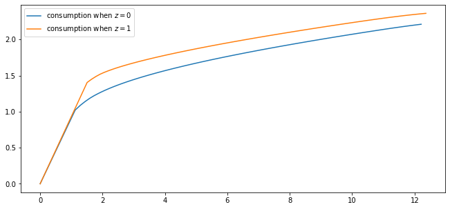
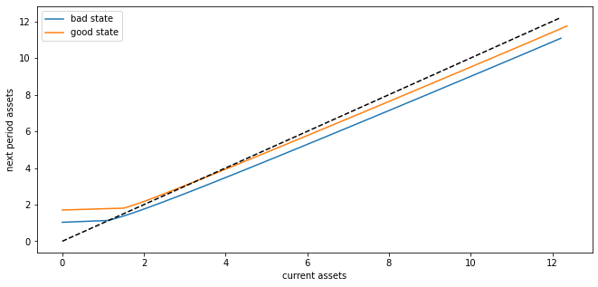
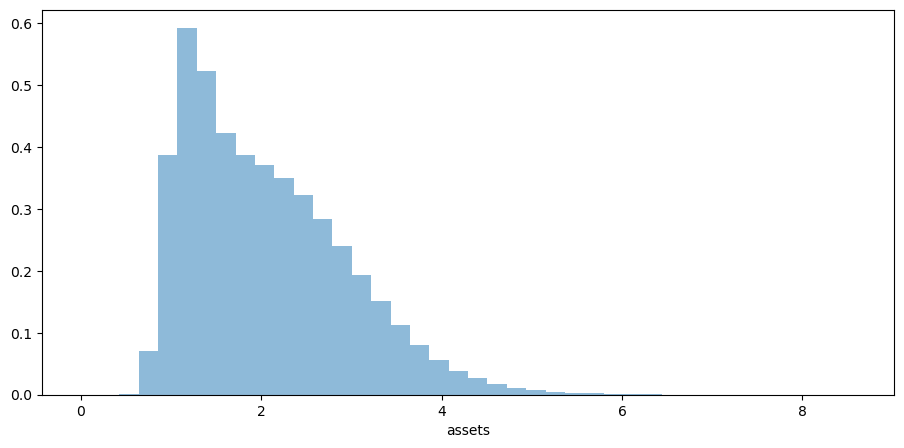
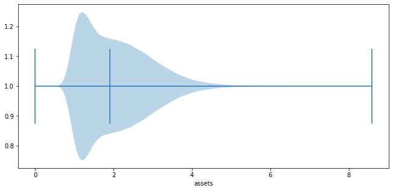

<!DOCTYPE html>

<html>
  <head>
    <meta charset="utf-8" />
    <meta name="viewport" content="width=device-width, initial-scale=1.0" /><meta name="generator" content="Docutils 0.17.1: http://docutils.sourceforge.net/" />

    <title>40. The Income Fluctuation Problem II: Stochastic Returns on Assets &#8212; Quantitative Economics with Python</title>
    <script src="https://unpkg.com/@popperjs/core@2.9.2/dist/umd/popper.min.js"></script>
    <script src="https://unpkg.com/tippy.js@6.3.1/dist/tippy-bundle.umd.js"></script>
    <script src="https://cdn.jsdelivr.net/npm/feather-icons/dist/feather.min.js"></script>
    
        <script>
            MathJax = {
            loader: {load: ['[tex]/boldsymbol', '[tex]/textmacros']},
            tex: {
                packages: {'[+]': ['boldsymbol', 'textmacros']},
                inlineMath: [['$', '$'], ['\\(', '\\)']],
                processEscapes: true,
                macros: {
                    "argmax" : "arg\\,max",
                    "argmin" : "arg\\,min",
                    "col"    : "col",
                    "Span"   :  "span",
                    "epsilon": "\\varepsilon",
                    "EE": "\\mathbb{E}",
                    "PP": "\\mathbb{P}",
                    "RR": "\\mathbb{R}",
                    "NN": "\\mathbb{N}",
                    "ZZ": "\\mathbb{Z}",
                    "aA": "\\mathcal{A}",
                    "bB": "\\mathcal{B}",
                    "cC": "\\mathcal{C}",
                    "dD": "\\mathcal{D}",
                    "eE": "\\mathcal{E}",
                    "fF": "\\mathcal{F}",
                    "gG": "\\mathcal{G}",
                    "hH": "\\mathcal{H}",
                }
            },
            svg: {
                fontCache: 'global',
                scale: 0.92,
                displayAlign: "center",
            },
            };
        </script>
    
    
    
  <link href="_static/css/theme.css" rel="stylesheet">
  <link href="_static/css/index.ff1ffe594081f20da1ef19478df9384b.css" rel="stylesheet">

    
  <link rel="stylesheet"
    href="_static/vendor/fontawesome/5.13.0/css/all.min.css">
  <link rel="preload" as="font" type="font/woff2" crossorigin
    href="_static/vendor/fontawesome/5.13.0/webfonts/fa-solid-900.woff2">
  <link rel="preload" as="font" type="font/woff2" crossorigin
    href="_static/vendor/fontawesome/5.13.0/webfonts/fa-brands-400.woff2">

    
      

    
    <link rel="stylesheet" type="text/css" href="_static/pygments.css" />
    <link rel="stylesheet" type="text/css" href="_static/quantecon-book-theme.1ef59f8f4e91ec8319176e8479c6af4e.css" />
    <link rel="stylesheet" type="text/css" href="_static/togglebutton.css" />
    <link rel="stylesheet" type="text/css" href="_static/copybutton.css" />
    <link rel="stylesheet" type="text/css" href="_static/mystnb.css" />
    <link rel="stylesheet" type="text/css" href="_static/sphinx-thebe.css" />
    <link rel="stylesheet" type="text/css" href="_static/panels-main.c949a650a448cc0ae9fd3441c0e17fb0.css" />
    <link rel="stylesheet" type="text/css" href="_static/panels-variables.06eb56fa6e07937060861dad626602ad.css" />
    
  <link rel="preload" as="script" href="_static/js/index.be7d3bbb2ef33a8344ce.js">


    <script data-url_root="./" id="documentation_options" src="_static/documentation_options.js"></script>
    <script src="_static/jquery.js"></script>
    <script src="_static/underscore.js"></script>
    <script src="_static/doctools.js"></script>
    <script src="_static/togglebutton.js"></script>
    <script src="_static/clipboard.min.js"></script>
    <script src="_static/copybutton.js"></script>
    <script>var togglebuttonSelector = '.toggle, .admonition.dropdown, .tag_hide_input div.cell_input, .tag_hide-input div.cell_input, .tag_hide_output div.cell_output, .tag_hide-output div.cell_output, .tag_hide_cell.cell, .tag_hide-cell.cell';</script>
    <script src="_static/sphinx-book-theme.12a9622fbb08dcb3a2a40b2c02b83a57.js"></script>
    <script src="_static/quantecon-book-theme.15b0c36fffe88f468997fa7b698991d3.js"></script>
    <script async="async" src="https://cdn.jsdelivr.net/npm/mathjax@3/es5/tex-mml-svg.js"></script>
    <script>window.MathJax = {"tex": {"macros": {"argmax": "arg\\,max", "argmin": "arg\\,min"}}, "options": {"processHtmlClass": "tex2jax_process|mathjax_process|math|output_area"}}</script>
    <script async="async" src="https://unpkg.com/thebe@0.5.1/lib/index.js"></script>
    <script>
        const thebe_selector = ".thebe"
        const thebe_selector_input = "pre"
        const thebe_selector_output = ".output"
    </script>
    <script async="async" src="_static/sphinx-thebe.js"></script>
    <link rel="canonical" href="https://python.quantecon.org/ifp_advanced.html" />
    <link rel="shortcut icon" href="_static/lectures-favicon.ico"/>
    <link rel="index" title="Index" href="genindex.html" />
    <link rel="search" title="Search" href="search.html" />
    <link rel="next" title="41. Job Search VII: Search with Learning" href="odu.html" />
    <link rel="prev" title="39. The Income Fluctuation Problem I: Basic Model" href="ifp.html" />

<!-- Normal Meta Tags -->
<meta name="author" context="Thomas J. Sargent &amp; John Stachurski" />
<meta name="keywords" content="Python, QuantEcon, Quantitative Economics, Economics, Sloan, Alfred P. Sloan Foundation, Tom J. Sargent, John Stachurski" />
<meta name="description" content=This website presents a set of lectures on quantitative economic modeling, designed and written by Thomas J. Sargent and John Stachurski. />

<!-- Twitter tags -->
<meta name="twitter:card" content="summary" />
<meta name="twitter:site" content="@quantecon" />
<meta name="twitter:title" content="The Income Fluctuation Problem II: Stochastic Returns on Assets"/>
<meta name="twitter:description" content="This website presents a set of lectures on quantitative economic modeling, designed and written by Thomas J. Sargent and John Stachurski.">
<meta name="twitter:creator" content="@quantecon">
<meta name="twitter:image" content="https://assets.quantecon.org/img/qe-twitter-logo.png">

<!-- Opengraph tags -->
<meta property="og:title" content="The Income Fluctuation Problem II: Stochastic Returns on Assets" />
<meta property="og:type" content="website" />
<meta property="og:url" content="https://python.quantecon.org/ifp_advanced.html" />
<meta property="og:image" content="https://assets.quantecon.org/img/qe-og-logo.png" />
<meta property="og:description" content="This website presents a set of lectures on quantitative economic modeling, designed and written by Thomas J. Sargent and John Stachurski." />
<meta property="og:site_name" content="Quantitative Economics with Python" />
<meta name="theme-color" content="#ffffff" />

  </head>
<body>


    <span id="top"></span>

    <div class="qe-wrapper">

        <div class="qe-main">

            <div class="qe-page" id=ifp_advanced>

                <div class="qe-page__toc">

                    <div class="inner">

                        
                        <div class="qe-page__toc-header">
                            On this page
                        </div>


                        <nav id="bd-toc-nav" class="qe-page__toc-nav">
                            <ul class="visible nav section-nav flex-column">
 <li class="toc-h2 nav-item toc-entry">
  <a class="reference internal nav-link" href="#overview">
   40.1. Overview
  </a>
 </li>
 <li class="toc-h2 nav-item toc-entry">
  <a class="reference internal nav-link" href="#the-savings-problem">
   40.2. The Savings Problem
  </a>
  <ul class="nav section-nav flex-column">
   <li class="toc-h3 nav-item toc-entry">
    <a class="reference internal nav-link" href="#set-up">
     40.2.1. Set Up
    </a>
   </li>
   <li class="toc-h3 nav-item toc-entry">
    <a class="reference internal nav-link" href="#assumptions">
     40.2.2. Assumptions
    </a>
   </li>
   <li class="toc-h3 nav-item toc-entry">
    <a class="reference internal nav-link" href="#optimality">
     40.2.3. Optimality
    </a>
   </li>
  </ul>
 </li>
 <li class="toc-h2 nav-item toc-entry">
  <a class="reference internal nav-link" href="#solution-algorithm">
   40.3. Solution Algorithm
  </a>
  <ul class="nav section-nav flex-column">
   <li class="toc-h3 nav-item toc-entry">
    <a class="reference internal nav-link" href="#a-time-iteration-operator">
     40.3.1. A Time Iteration Operator
    </a>
   </li>
   <li class="toc-h3 nav-item toc-entry">
    <a class="reference internal nav-link" href="#convergence-properties">
     40.3.2. Convergence Properties
    </a>
   </li>
   <li class="toc-h3 nav-item toc-entry">
    <a class="reference internal nav-link" href="#using-an-endogenous-grid">
     40.3.3. Using an Endogenous Grid
    </a>
    <ul class="nav section-nav flex-column">
     <li class="toc-h4 nav-item toc-entry">
      <a class="reference internal nav-link" href="#finding-optimal-consumption">
       40.3.3.1. Finding Optimal Consumption
      </a>
     </li>
     <li class="toc-h4 nav-item toc-entry">
      <a class="reference internal nav-link" href="#iterating">
       40.3.3.2. Iterating
      </a>
     </li>
    </ul>
   </li>
   <li class="toc-h3 nav-item toc-entry">
    <a class="reference internal nav-link" href="#testing-the-assumptions">
     40.3.4. Testing the Assumptions
    </a>
   </li>
  </ul>
 </li>
 <li class="toc-h2 nav-item toc-entry">
  <a class="reference internal nav-link" href="#implementation">
   40.4. Implementation
  </a>
  <ul class="nav section-nav flex-column">
   <li class="toc-h3 nav-item toc-entry">
    <a class="reference internal nav-link" href="#law-of-motion">
     40.4.1. Law of Motion
    </a>
   </li>
  </ul>
 </li>
 <li class="toc-h2 nav-item toc-entry">
  <a class="reference internal nav-link" href="#exercises">
   40.5. Exercises
  </a>
  <ul class="nav section-nav flex-column">
   <li class="toc-h3 nav-item toc-entry">
    <a class="reference internal nav-link" href="#exercise-1">
     40.5.1. Exercise 1
    </a>
   </li>
  </ul>
 </li>
 <li class="toc-h2 nav-item toc-entry">
  <a class="reference internal nav-link" href="#solutions">
   40.6. Solutions
  </a>
  <ul class="nav section-nav flex-column">
   <li class="toc-h3 nav-item toc-entry">
    <a class="reference internal nav-link" href="#id9">
     40.6.1. Exercise 1
    </a>
   </li>
  </ul>
 </li>
</ul>

                            <p class="logo">
                                
                                    
                                    <a href=https://quantecon.org></a>
                                    
                                
                            </p>

                            <p class="powered">Powered by <a href="https://jupyterbook.org/">Jupyter Book</a></p>

                        </nav>

                        <div class="qe-page__toc-footer">
                            
                            
                            <p><a href="#top"><strong>Back to top</strong></a></p>
                        </div>

                    </div>

                </div>

                <div class="qe-page__header">

                    <div class="qe-page__header-copy">

                        <p class="qe-page__header-heading"><a href="intro.html">Quantitative Economics with Python</a></p>

                        <p class="qe-page__header-subheading">The Income Fluctuation Problem II: Stochastic Returns on Assets</p>

                    </div>

                    <p class="qe-page__header-authors">Thomas J. Sargent & John Stachurski</p>

                </div> <!-- .page__header -->


                
                <main class="qe-page__content" role="main">
                    
                    <div>
                        
  <div id="qe-notebook-header" align="right" style="text-align:right;">
        <a href="https://quantecon.org/" title="quantecon.org">
                
        </a>
</div><section class="tex2jax_ignore mathjax_ignore" id="the-income-fluctuation-problem-ii-stochastic-returns-on-assets">
<h1><a class="toc-backref" href="#id10"><span class="section-number">40. </span><span class="target" id="index-0"></span>The Income Fluctuation Problem II: Stochastic Returns on Assets</a><a class="headerlink" href="#the-income-fluctuation-problem-ii-stochastic-returns-on-assets" title="Permalink to this headline">¶</a></h1>
<div class="contents topic" id="contents">
<p class="topic-title">Contents</p>
<ul class="simple">
<li><p><a class="reference internal" href="#the-income-fluctuation-problem-ii-stochastic-returns-on-assets" id="id10">The Income Fluctuation Problem II: Stochastic Returns on Assets</a></p>
<ul>
<li><p><a class="reference internal" href="#overview" id="id11">Overview</a></p></li>
<li><p><a class="reference internal" href="#the-savings-problem" id="id12">The Savings Problem</a></p></li>
<li><p><a class="reference internal" href="#solution-algorithm" id="id13">Solution Algorithm</a></p></li>
<li><p><a class="reference internal" href="#implementation" id="id14">Implementation</a></p></li>
<li><p><a class="reference internal" href="#exercises" id="id15">Exercises</a></p></li>
<li><p><a class="reference internal" href="#solutions" id="id16">Solutions</a></p></li>
</ul>
</li>
</ul>
</div>
<p>In addition to what’s in Anaconda, this lecture will need the following libraries:</p>
<div class="cell tag_hide-output docutils container">
<div class="cell_input docutils container">
<div class="highlight-ipython3 notranslate"><div class="highlight"><pre><span></span><span class="o">!</span>conda install -y quantecon
<span class="o">!</span>pip install interpolation
</pre></div>
</div>
</div>
<div class="cell_output docutils container">
<div class="output stream highlight-myst-ansi notranslate"><div class="highlight"><pre><span></span>Collecting package metadata (current_repodata.json): - 
</pre></div>
</div>
<div class="output stream highlight-myst-ansi notranslate"><div class="highlight"><pre><span></span>\ 
</pre></div>
</div>
<div class="output stream highlight-myst-ansi notranslate"><div class="highlight"><pre><span></span>| 
</pre></div>
</div>
<div class="output stream highlight-myst-ansi notranslate"><div class="highlight"><pre><span></span>/ 
</pre></div>
</div>
<div class="output stream highlight-myst-ansi notranslate"><div class="highlight"><pre><span></span>- 
</pre></div>
</div>
<div class="output stream highlight-myst-ansi notranslate"><div class="highlight"><pre><span></span>\ 
</pre></div>
</div>
<div class="output stream highlight-myst-ansi notranslate"><div class="highlight"><pre><span></span>| 
</pre></div>
</div>
<div class="output stream highlight-myst-ansi notranslate"><div class="highlight"><pre><span></span>/ 
</pre></div>
</div>
<div class="output stream highlight-myst-ansi notranslate"><div class="highlight"><pre><span></span>- 
</pre></div>
</div>
<div class="output stream highlight-myst-ansi notranslate"><div class="highlight"><pre><span></span>\ 
</pre></div>
</div>
<div class="output stream highlight-myst-ansi notranslate"><div class="highlight"><pre><span></span>| 
</pre></div>
</div>
<div class="output stream highlight-myst-ansi notranslate"><div class="highlight"><pre><span></span>/ 
</pre></div>
</div>
<div class="output stream highlight-myst-ansi notranslate"><div class="highlight"><pre><span></span>- 
</pre></div>
</div>
<div class="output stream highlight-myst-ansi notranslate"><div class="highlight"><pre><span></span>\ 
</pre></div>
</div>
<div class="output stream highlight-myst-ansi notranslate"><div class="highlight"><pre><span></span>| 
</pre></div>
</div>
<div class="output stream highlight-myst-ansi notranslate"><div class="highlight"><pre><span></span>done
Solving environment: - 
</pre></div>
</div>
<div class="output stream highlight-myst-ansi notranslate"><div class="highlight"><pre><span></span>\ 
</pre></div>
</div>
<div class="output stream highlight-myst-ansi notranslate"><div class="highlight"><pre><span></span>| 
</pre></div>
</div>
<div class="output stream highlight-myst-ansi notranslate"><div class="highlight"><pre><span></span>/ 
</pre></div>
</div>
<div class="output stream highlight-myst-ansi notranslate"><div class="highlight"><pre><span></span>- 
</pre></div>
</div>
<div class="output stream highlight-myst-ansi notranslate"><div class="highlight"><pre><span></span>\ 
</pre></div>
</div>
<div class="output stream highlight-myst-ansi notranslate"><div class="highlight"><pre><span></span>| 
</pre></div>
</div>
<div class="output stream highlight-myst-ansi notranslate"><div class="highlight"><pre><span></span>/ 
</pre></div>
</div>
<div class="output stream highlight-myst-ansi notranslate"><div class="highlight"><pre><span></span>- 
</pre></div>
</div>
<div class="output stream highlight-myst-ansi notranslate"><div class="highlight"><pre><span></span>\ 
</pre></div>
</div>
<div class="output stream highlight-myst-ansi notranslate"><div class="highlight"><pre><span></span>| 
</pre></div>
</div>
<div class="output stream highlight-myst-ansi notranslate"><div class="highlight"><pre><span></span>/ 
</pre></div>
</div>
<div class="output stream highlight-myst-ansi notranslate"><div class="highlight"><pre><span></span>- 
</pre></div>
</div>
<div class="output stream highlight-myst-ansi notranslate"><div class="highlight"><pre><span></span>\ 
</pre></div>
</div>
<div class="output stream highlight-myst-ansi notranslate"><div class="highlight"><pre><span></span>| 
</pre></div>
</div>
<div class="output stream highlight-myst-ansi notranslate"><div class="highlight"><pre><span></span>/ 
</pre></div>
</div>
<div class="output stream highlight-myst-ansi notranslate"><div class="highlight"><pre><span></span>- 
</pre></div>
</div>
<div class="output stream highlight-myst-ansi notranslate"><div class="highlight"><pre><span></span>\ 
</pre></div>
</div>
<div class="output stream highlight-myst-ansi notranslate"><div class="highlight"><pre><span></span>| 
</pre></div>
</div>
<div class="output stream highlight-myst-ansi notranslate"><div class="highlight"><pre><span></span>/ 
</pre></div>
</div>
<div class="output stream highlight-myst-ansi notranslate"><div class="highlight"><pre><span></span>- 
</pre></div>
</div>
<div class="output stream highlight-myst-ansi notranslate"><div class="highlight"><pre><span></span>\ 
</pre></div>
</div>
<div class="output stream highlight-myst-ansi notranslate"><div class="highlight"><pre><span></span>| 
</pre></div>
</div>
<div class="output stream highlight-myst-ansi notranslate"><div class="highlight"><pre><span></span>/ 
</pre></div>
</div>
<div class="output stream highlight-myst-ansi notranslate"><div class="highlight"><pre><span></span>- 
</pre></div>
</div>
<div class="output stream highlight-myst-ansi notranslate"><div class="highlight"><pre><span></span>\ 
</pre></div>
</div>
<div class="output stream highlight-myst-ansi notranslate"><div class="highlight"><pre><span></span>done
</pre></div>
</div>
<div class="output stream highlight-myst-ansi notranslate"><div class="highlight"><pre><span></span># All requested packages already installed.
</pre></div>
</div>
<div class="output stream highlight-myst-ansi notranslate"><div class="highlight"><pre><span></span>Requirement already satisfied: interpolation in /usr/share/miniconda3/envs/quantecon/lib/python3.8/site-packages (2.2.1)
</pre></div>
</div>
<div class="output stream highlight-myst-ansi notranslate"><div class="highlight"><pre><span></span>Requirement already satisfied: tempita&gt;=0.5.2 in /usr/share/miniconda3/envs/quantecon/lib/python3.8/site-packages (from interpolation) (0.5.3.dev0)
Requirement already satisfied: scipy&gt;=1.4.1 in /usr/share/miniconda3/envs/quantecon/lib/python3.8/site-packages (from interpolation) (1.7.1)
Requirement already satisfied: numba&gt;=0.47 in /usr/share/miniconda3/envs/quantecon/lib/python3.8/site-packages (from interpolation) (0.54.1)
Requirement already satisfied: numpy&gt;=1.18.1 in /usr/share/miniconda3/envs/quantecon/lib/python3.8/site-packages (from interpolation) (1.20.3)
Requirement already satisfied: setuptools in /usr/share/miniconda3/envs/quantecon/lib/python3.8/site-packages (from numba&gt;=0.47-&gt;interpolation) (58.0.4)
Requirement already satisfied: llvmlite&lt;0.38,&gt;=0.37.0rc1 in /usr/share/miniconda3/envs/quantecon/lib/python3.8/site-packages (from numba&gt;=0.47-&gt;interpolation) (0.37.0)
</pre></div>
</div>
</div>
</div>
<section id="overview">
<h2><a class="toc-backref" href="#id11"><span class="section-number">40.1. </span>Overview</a><a class="headerlink" href="#overview" title="Permalink to this headline">¶</a></h2>
<p>In this lecture, we continue our study of the <a class="reference internal" href="ifp.html"><span class="doc">income fluctuation problem</span></a>.</p>
<p>While the interest rate was previously taken to be fixed, we now allow
returns on assets to be state-dependent.</p>
<p>This matches the fact that most households with a positive level of assets
face some capital income risk.</p>
<p>It has been argued that modeling capital income risk is essential for
understanding the joint distribution of income and wealth (see, e.g.,
<span id="id1">[<a class="reference internal" href="zreferences.html#id106">BBZ15</a>]</span> or <span id="id2">[<a class="reference internal" href="zreferences.html#id229">ST19b</a>]</span>).</p>
<p>Theoretical properties of the household savings model presented here are
analyzed in detail in <span id="id3">[<a class="reference internal" href="zreferences.html#id228">MST20</a>]</span>.</p>
<p>In terms of computation, we use a combination of time iteration and the
endogenous grid method to solve the model quickly and accurately.</p>
<p>We require the following imports:</p>
<div class="cell docutils container">
<div class="cell_input docutils container">
<div class="highlight-ipython3 notranslate"><div class="highlight"><pre><span></span><span class="o">%</span><span class="k">matplotlib</span> inline
<span class="kn">import</span> <span class="nn">matplotlib.pyplot</span> <span class="k">as</span> <span class="nn">plt</span>
<span class="n">plt</span><span class="o">.</span><span class="n">rcParams</span><span class="p">[</span><span class="s2">&quot;figure.figsize&quot;</span><span class="p">]</span> <span class="o">=</span> <span class="p">(</span><span class="mi">11</span><span class="p">,</span> <span class="mi">5</span><span class="p">)</span>  <span class="c1">#set default figure size</span>
<span class="kn">import</span> <span class="nn">numpy</span> <span class="k">as</span> <span class="nn">np</span>
<span class="kn">from</span> <span class="nn">quantecon.optimize</span> <span class="kn">import</span> <span class="n">brent_max</span><span class="p">,</span> <span class="n">brentq</span>
<span class="kn">from</span> <span class="nn">interpolation</span> <span class="kn">import</span> <span class="n">interp</span>
<span class="kn">from</span> <span class="nn">numba</span> <span class="kn">import</span> <span class="n">njit</span><span class="p">,</span> <span class="n">float64</span>
<span class="kn">from</span> <span class="nn">numba.experimental</span> <span class="kn">import</span> <span class="n">jitclass</span>
<span class="kn">from</span> <span class="nn">quantecon</span> <span class="kn">import</span> <span class="n">MarkovChain</span>
</pre></div>
</div>
</div>
</div>
</section>
<section id="the-savings-problem">
<h2><a class="toc-backref" href="#id12"><span class="section-number">40.2. </span>The Savings Problem</a><a class="headerlink" href="#the-savings-problem" title="Permalink to this headline">¶</a></h2>
<p>In this section we review the household problem and optimality results.</p>
<section id="set-up">
<h3><span class="section-number">40.2.1. </span>Set Up<a class="headerlink" href="#set-up" title="Permalink to this headline">¶</a></h3>
<p>A household chooses a consumption-asset path <span class="math notranslate nohighlight">\(\{(c_t, a_t)\}\)</span> to
maximize</p>
<div class="math notranslate nohighlight" id="equation-trans-at">
<span class="eqno">(40.1)<a class="headerlink" href="#equation-trans-at" title="Permalink to this equation">¶</a></span>\[\mathbb E \left\{ \sum_{t=0}^\infty \beta^t u(c_t) \right\}\]</div>
<p>subject to</p>
<div class="math notranslate nohighlight" id="equation-trans-at2">
<span class="eqno">(40.2)<a class="headerlink" href="#equation-trans-at2" title="Permalink to this equation">¶</a></span>\[a_{t+1} = R_{t+1} (a_t - c_t) + Y_{t+1}
\; \text{ and } \;
0 \leq c_t \leq a_t,\]</div>
<p>with initial condition <span class="math notranslate nohighlight">\((a_0, Z_0)=(a,z)\)</span> treated as given.</p>
<p>Note that <span class="math notranslate nohighlight">\(\{R_t\}_{t \geq 1}\)</span>, the gross rate of return on wealth, is allowed to be stochastic.</p>
<p>The sequence <span class="math notranslate nohighlight">\(\{Y_t \}_{t \geq 1}\)</span> is non-financial income.</p>
<p>The stochastic components of the problem obey</p>
<div class="math notranslate nohighlight" id="equation-eq-ry-func">
<span class="eqno">(40.3)<a class="headerlink" href="#equation-eq-ry-func" title="Permalink to this equation">¶</a></span>\[R_t = R(Z_t, \zeta_t)
  \quad \text{and} \quad
Y_t = Y(Z_t, \eta_t),\]</div>
<p>where</p>
<ul class="simple">
<li><p>the maps <span class="math notranslate nohighlight">\(R\)</span> and <span class="math notranslate nohighlight">\(Y\)</span> are time-invariant nonnegative functions,</p></li>
<li><p>the innovation processes <span class="math notranslate nohighlight">\(\{\zeta_t\}\)</span> and
<span class="math notranslate nohighlight">\(\{\eta_t\}\)</span> are IID and independent of each other, and</p></li>
<li><p><span class="math notranslate nohighlight">\(\{Z_t\}_{t \geq 0}\)</span> is an irreducible time-homogeneous Markov chain on a finite set <span class="math notranslate nohighlight">\(\mathsf Z\)</span></p></li>
</ul>
<p>Let <span class="math notranslate nohighlight">\(P\)</span> represent the Markov matrix for the chain <span class="math notranslate nohighlight">\(\{Z_t\}_{t \geq 0}\)</span>.</p>
<p>Our assumptions on preferences are the same as our <a class="reference internal" href="ifp.html"><span class="doc">previous lecture</span></a> on the income fluctuation problem.</p>
<p>As before, <span class="math notranslate nohighlight">\(\mathbb E_z \hat X\)</span> means expectation of next period value
<span class="math notranslate nohighlight">\(\hat X\)</span> given current value <span class="math notranslate nohighlight">\(Z = z\)</span>.</p>
</section>
<section id="assumptions">
<h3><span class="section-number">40.2.2. </span>Assumptions<a class="headerlink" href="#assumptions" title="Permalink to this headline">¶</a></h3>
<p>We need restrictions to ensure that the objective <a class="reference internal" href="#equation-trans-at">(40.1)</a> is finite and
the solution methods described below converge.</p>
<p>We also need to ensure that the present discounted value of wealth
does not grow too quickly.</p>
<p>When <span class="math notranslate nohighlight">\(\{R_t\}\)</span> was constant we required that <span class="math notranslate nohighlight">\(\beta R &lt; 1\)</span>.</p>
<p>Now it is stochastic, we require that</p>
<div class="math notranslate nohighlight" id="equation-fpbc2">
<span class="eqno">(40.4)<a class="headerlink" href="#equation-fpbc2" title="Permalink to this equation">¶</a></span>\[\beta G_R &lt; 1,
\quad \text{where} \quad
G_R := \lim_{n \to \infty}
\left(\mathbb E \prod_{t=1}^n R_t \right)^{1/n}\]</div>
<p>Notice that, when <span class="math notranslate nohighlight">\(\{R_t\}\)</span> takes some constant value <span class="math notranslate nohighlight">\(R\)</span>, this
reduces to the previous restriction <span class="math notranslate nohighlight">\(\beta R &lt; 1\)</span></p>
<p>The value <span class="math notranslate nohighlight">\(G_R\)</span> can be thought of as the long run (geometric) average
gross rate of return.</p>
<p>More intuition behind <a class="reference internal" href="#equation-fpbc2">(40.4)</a> is provided in <span id="id4">[<a class="reference internal" href="zreferences.html#id228">MST20</a>]</span>.</p>
<p>Discussion on how to check it is given below.</p>
<p>Finally, we impose some routine technical restrictions on non-financial income.</p>
<div class="math notranslate nohighlight">
\[
\mathbb E \, Y_t &lt; \infty \text{ and } \mathbb E \, u'(Y_t) &lt; \infty
\label{a:y0}
\]</div>
<p>One relatively simple setting where all these restrictions are satisfied is
the IID and CRRA environment of <span id="id5">[<a class="reference internal" href="zreferences.html#id106">BBZ15</a>]</span>.</p>
</section>
<section id="optimality">
<h3><span class="section-number">40.2.3. </span>Optimality<a class="headerlink" href="#optimality" title="Permalink to this headline">¶</a></h3>
<p>Let the class of candidate consumption policies <span class="math notranslate nohighlight">\(\mathscr C\)</span> be defined
<a class="reference internal" href="ifp.html"><span class="doc">as before</span></a>.</p>
<p>In <span id="id6">[<a class="reference internal" href="zreferences.html#id228">MST20</a>]</span> it is shown that, under the stated assumptions,</p>
<ul class="simple">
<li><p>any <span class="math notranslate nohighlight">\(\sigma \in \mathscr C\)</span> satisfying the Euler equation is an
optimal policy and</p></li>
<li><p>exactly one such policy exists in <span class="math notranslate nohighlight">\(\mathscr C\)</span>.</p></li>
</ul>
<p>In the present setting, the Euler equation takes the form</p>
<div class="math notranslate nohighlight" id="equation-ifpa-euler">
<span class="eqno">(40.5)<a class="headerlink" href="#equation-ifpa-euler" title="Permalink to this equation">¶</a></span>\[(u' \circ \sigma) (a, z) =
\max \left\{
           \beta \, \mathbb E_z \,\hat{R} \,
             (u' \circ \sigma)[\hat{R}(a - \sigma(a, z)) + \hat{Y}, \, \hat{Z}],
          \, u'(a)
       \right\}\]</div>
<p>(Intuition and derivation are similar to our <a class="reference internal" href="ifp.html"><span class="doc">earlier lecture</span></a> on
the income fluctuation problem.)</p>
<p>We again solve the Euler equation using time iteration, iterating with a
Coleman–Reffett operator <span class="math notranslate nohighlight">\(K\)</span> defined to match the Euler equation
<a class="reference internal" href="#equation-ifpa-euler">(40.5)</a>.</p>
</section>
</section>
<section id="solution-algorithm">
<h2><a class="toc-backref" href="#id13"><span class="section-number">40.3. </span>Solution Algorithm</a><a class="headerlink" href="#solution-algorithm" title="Permalink to this headline">¶</a></h2>
<section id="a-time-iteration-operator">
<span id="index-1"></span><h3><span class="section-number">40.3.1. </span>A Time Iteration Operator<a class="headerlink" href="#a-time-iteration-operator" title="Permalink to this headline">¶</a></h3>
<p>Our definition of the candidate class <span class="math notranslate nohighlight">\(\sigma \in \mathscr C\)</span> of consumption
policies is the same as in our <a class="reference internal" href="ifp.html"><span class="doc">earlier lecture</span></a> on the income
fluctuation problem.</p>
<p>For fixed <span class="math notranslate nohighlight">\(\sigma \in \mathscr C\)</span> and <span class="math notranslate nohighlight">\((a,z) \in \mathbf S\)</span>, the value
<span class="math notranslate nohighlight">\(K\sigma(a,z)\)</span> of the function <span class="math notranslate nohighlight">\(K\sigma\)</span> at <span class="math notranslate nohighlight">\((a,z)\)</span> is defined as the
<span class="math notranslate nohighlight">\(\xi \in (0,a]\)</span> that solves</p>
<div class="math notranslate nohighlight" id="equation-k-opr">
<span class="eqno">(40.6)<a class="headerlink" href="#equation-k-opr" title="Permalink to this equation">¶</a></span>\[u'(\xi) =
\max \left\{
          \beta \, \mathbb E_z \, \hat{R} \,
             (u' \circ \sigma)[\hat{R}(a - \xi) + \hat{Y}, \, \hat{Z}],
          \, u'(a)
       \right\}\]</div>
<p>The idea behind <span class="math notranslate nohighlight">\(K\)</span> is that, as can be seen from the definitions,
<span class="math notranslate nohighlight">\(\sigma \in \mathscr C\)</span> satisfies the Euler equation
if and only if <span class="math notranslate nohighlight">\(K\sigma(a, z) = \sigma(a, z)\)</span> for all <span class="math notranslate nohighlight">\((a, z) \in
\mathbf S\)</span>.</p>
<p>This means that fixed points of <span class="math notranslate nohighlight">\(K\)</span> in <span class="math notranslate nohighlight">\(\mathscr C\)</span> and optimal
consumption policies exactly coincide (see <span id="id7">[<a class="reference internal" href="zreferences.html#id228">MST20</a>]</span> for more details).</p>
</section>
<section id="convergence-properties">
<h3><span class="section-number">40.3.2. </span>Convergence Properties<a class="headerlink" href="#convergence-properties" title="Permalink to this headline">¶</a></h3>
<p>As before, we pair <span class="math notranslate nohighlight">\(\mathscr C\)</span> with the distance</p>
<div class="math notranslate nohighlight">
\[
\rho(c,d)
:= \sup_{(a,z) \in \mathbf S}
          \left|
              \left(u' \circ c \right)(a,z) -
              \left(u' \circ d \right)(a,z)
          \right|,
\]</div>
<p>It can be shown that</p>
<ol class="simple">
<li><p><span class="math notranslate nohighlight">\((\mathscr C, \rho)\)</span> is a complete metric space,</p></li>
<li><p>there exists an integer <span class="math notranslate nohighlight">\(n\)</span> such that <span class="math notranslate nohighlight">\(K^n\)</span> is a contraction
mapping on <span class="math notranslate nohighlight">\((\mathscr C, \rho)\)</span>, and</p></li>
<li><p>The unique fixed point of <span class="math notranslate nohighlight">\(K\)</span> in <span class="math notranslate nohighlight">\(\mathscr C\)</span> is
the unique optimal policy in <span class="math notranslate nohighlight">\(\mathscr C\)</span>.</p></li>
</ol>
<p>We now have a clear path to successfully approximating the optimal policy:
choose some <span class="math notranslate nohighlight">\(\sigma \in \mathscr C\)</span> and then iterate with <span class="math notranslate nohighlight">\(K\)</span> until
convergence (as measured by the distance <span class="math notranslate nohighlight">\(\rho\)</span>).</p>
</section>
<section id="using-an-endogenous-grid">
<h3><span class="section-number">40.3.3. </span>Using an Endogenous Grid<a class="headerlink" href="#using-an-endogenous-grid" title="Permalink to this headline">¶</a></h3>
<p>In the study of that model we found that it was possible to further
accelerate time iteration via the <a class="reference internal" href="egm_policy_iter.html"><span class="doc">endogenous grid method</span></a>.</p>
<p>We will use the same method here.</p>
<p>The methodology is the same as it was for the optimal growth model, with the
minor exception that we need to remember that consumption is not always
interior.</p>
<p>In particular, optimal consumption can be equal to assets when the level of
assets is low.</p>
<section id="finding-optimal-consumption">
<h4><span class="section-number">40.3.3.1. </span>Finding Optimal Consumption<a class="headerlink" href="#finding-optimal-consumption" title="Permalink to this headline">¶</a></h4>
<p>The endogenous grid method (EGM) calls for us to take a grid of <em>savings</em>
values <span class="math notranslate nohighlight">\(s_i\)</span>, where each such <span class="math notranslate nohighlight">\(s\)</span> is interpreted as <span class="math notranslate nohighlight">\(s = a -
c\)</span>.</p>
<p>For the lowest grid point we take <span class="math notranslate nohighlight">\(s_0 = 0\)</span>.</p>
<p>For the corresponding <span class="math notranslate nohighlight">\(a_0, c_0\)</span> pair we have <span class="math notranslate nohighlight">\(a_0 = c_0\)</span>.</p>
<p>This happens close to the origin, where assets are low and the household
consumes all that it can.</p>
<p>Although there are many solutions, the one we take is <span class="math notranslate nohighlight">\(a_0 = c_0 = 0\)</span>,
which pins down the policy at the origin, aiding interpolation.</p>
<p>For <span class="math notranslate nohighlight">\(s &gt; 0\)</span>, we have, by definition, <span class="math notranslate nohighlight">\(c &lt; a\)</span>, and hence
consumption is interior.</p>
<p>Hence the max component of <a class="reference internal" href="#equation-ifpa-euler">(40.5)</a> drops out, and we solve for</p>
<div class="math notranslate nohighlight" id="equation-eqsifc2">
<span class="eqno">(40.7)<a class="headerlink" href="#equation-eqsifc2" title="Permalink to this equation">¶</a></span>\[c_i =
(u')^{-1}
\left\{
    \beta \, \mathbb E_z
    \hat R
    (u' \circ \sigma) \, [\hat R s_i + \hat Y, \, \hat Z]
\right\}\]</div>
<p>at each <span class="math notranslate nohighlight">\(s_i\)</span>.</p>
</section>
<section id="iterating">
<h4><span class="section-number">40.3.3.2. </span>Iterating<a class="headerlink" href="#iterating" title="Permalink to this headline">¶</a></h4>
<p>Once we have the pairs <span class="math notranslate nohighlight">\(\{s_i, c_i\}\)</span>, the endogenous asset grid is
obtained by <span class="math notranslate nohighlight">\(a_i = c_i + s_i\)</span>.</p>
<p>Also, we held <span class="math notranslate nohighlight">\(z \in \mathsf Z\)</span> in the discussion above so we can pair
it with <span class="math notranslate nohighlight">\(a_i\)</span>.</p>
<p>An approximation of the policy <span class="math notranslate nohighlight">\((a, z) \mapsto \sigma(a, z)\)</span> can be
obtained by interpolating <span class="math notranslate nohighlight">\(\{a_i, c_i\}\)</span> at each <span class="math notranslate nohighlight">\(z\)</span>.</p>
<p>In what follows, we use linear interpolation.</p>
</section>
</section>
<section id="testing-the-assumptions">
<h3><span class="section-number">40.3.4. </span>Testing the Assumptions<a class="headerlink" href="#testing-the-assumptions" title="Permalink to this headline">¶</a></h3>
<p>Convergence of time iteration is dependent on the condition <span class="math notranslate nohighlight">\(\beta G_R &lt; 1\)</span> being satisfied.</p>
<p>One can check this using the fact that <span class="math notranslate nohighlight">\(G_R\)</span> is equal to the spectral
radius of the matrix <span class="math notranslate nohighlight">\(L\)</span> defined by</p>
<div class="math notranslate nohighlight">
\[
L(z, \hat z) := P(z, \hat z) \int R(\hat z, x) \phi(x) dx
\]</div>
<p>This identity is proved in <span id="id8">[<a class="reference internal" href="zreferences.html#id228">MST20</a>]</span>, where <span class="math notranslate nohighlight">\(\phi\)</span> is the
density of the innovation <span class="math notranslate nohighlight">\(\zeta_t\)</span> to returns on assets.</p>
<p>(Remember that <span class="math notranslate nohighlight">\(\mathsf Z\)</span> is a finite set, so this expression defines a matrix.)</p>
<p>Checking the condition is even easier when <span class="math notranslate nohighlight">\(\{R_t\}\)</span> is IID.</p>
<p>In that case, it is clear from the definition of <span class="math notranslate nohighlight">\(G_R\)</span> that <span class="math notranslate nohighlight">\(G_R\)</span>
is just <span class="math notranslate nohighlight">\(\mathbb E R_t\)</span>.</p>
<p>We test the condition <span class="math notranslate nohighlight">\(\beta \mathbb E R_t &lt; 1\)</span> in the code below.</p>
</section>
</section>
<section id="implementation">
<h2><a class="toc-backref" href="#id14"><span class="section-number">40.4. </span>Implementation</a><a class="headerlink" href="#implementation" title="Permalink to this headline">¶</a></h2>
<p>We will assume that <span class="math notranslate nohighlight">\(R_t = \exp(a_r \zeta_t + b_r)\)</span> where <span class="math notranslate nohighlight">\(a_r, b_r\)</span>
are constants and <span class="math notranslate nohighlight">\(\{ \zeta_t\}\)</span> is IID standard normal.</p>
<p>We allow labor income to be correlated, with</p>
<div class="math notranslate nohighlight">
\[
Y_t = \exp(a_y \eta_t + Z_t b_y)
\]</div>
<p>where <span class="math notranslate nohighlight">\(\{ \eta_t\}\)</span> is also IID standard normal
and <span class="math notranslate nohighlight">\(\{ Z_t\}\)</span> is a Markov chain taking values in <span class="math notranslate nohighlight">\(\{0, 1\}\)</span>.</p>
<div class="cell docutils container">
<div class="cell_input docutils container">
<div class="highlight-ipython3 notranslate"><div class="highlight"><pre><span></span><span class="n">ifp_data</span> <span class="o">=</span> <span class="p">[</span>
    <span class="p">(</span><span class="s1">&#39;γ&#39;</span><span class="p">,</span> <span class="n">float64</span><span class="p">),</span>              <span class="c1"># utility parameter</span>
    <span class="p">(</span><span class="s1">&#39;β&#39;</span><span class="p">,</span> <span class="n">float64</span><span class="p">),</span>              <span class="c1"># discount factor</span>
    <span class="p">(</span><span class="s1">&#39;P&#39;</span><span class="p">,</span> <span class="n">float64</span><span class="p">[:,</span> <span class="p">:]),</span>        <span class="c1"># transition probs for z_t</span>
    <span class="p">(</span><span class="s1">&#39;a_r&#39;</span><span class="p">,</span> <span class="n">float64</span><span class="p">),</span>            <span class="c1"># scale parameter for R_t</span>
    <span class="p">(</span><span class="s1">&#39;b_r&#39;</span><span class="p">,</span> <span class="n">float64</span><span class="p">),</span>            <span class="c1"># additive parameter for R_t</span>
    <span class="p">(</span><span class="s1">&#39;a_y&#39;</span><span class="p">,</span> <span class="n">float64</span><span class="p">),</span>            <span class="c1"># scale parameter for Y_t</span>
    <span class="p">(</span><span class="s1">&#39;b_y&#39;</span><span class="p">,</span> <span class="n">float64</span><span class="p">),</span>            <span class="c1"># additive parameter for Y_t</span>
    <span class="p">(</span><span class="s1">&#39;s_grid&#39;</span><span class="p">,</span> <span class="n">float64</span><span class="p">[:]),</span>      <span class="c1"># Grid over savings</span>
    <span class="p">(</span><span class="s1">&#39;η_draws&#39;</span><span class="p">,</span> <span class="n">float64</span><span class="p">[:]),</span>     <span class="c1"># Draws of innovation η for MC</span>
    <span class="p">(</span><span class="s1">&#39;ζ_draws&#39;</span><span class="p">,</span> <span class="n">float64</span><span class="p">[:])</span>      <span class="c1"># Draws of innovation ζ for MC</span>
<span class="p">]</span>
</pre></div>
</div>
</div>
</div>
<div class="cell docutils container">
<div class="cell_input docutils container">
<div class="highlight-ipython3 notranslate"><div class="highlight"><pre><span></span><span class="nd">@jitclass</span><span class="p">(</span><span class="n">ifp_data</span><span class="p">)</span>
<span class="k">class</span> <span class="nc">IFP</span><span class="p">:</span>
    <span class="sd">&quot;&quot;&quot;</span>
<span class="sd">    A class that stores primitives for the income fluctuation</span>
<span class="sd">    problem.</span>
<span class="sd">    &quot;&quot;&quot;</span>

    <span class="k">def</span> <span class="fm">__init__</span><span class="p">(</span><span class="bp">self</span><span class="p">,</span>
                 <span class="n">γ</span><span class="o">=</span><span class="mf">1.5</span><span class="p">,</span>
                 <span class="n">β</span><span class="o">=</span><span class="mf">0.96</span><span class="p">,</span>
                 <span class="n">P</span><span class="o">=</span><span class="n">np</span><span class="o">.</span><span class="n">array</span><span class="p">([(</span><span class="mf">0.9</span><span class="p">,</span> <span class="mf">0.1</span><span class="p">),</span>
                             <span class="p">(</span><span class="mf">0.1</span><span class="p">,</span> <span class="mf">0.9</span><span class="p">)]),</span>
                 <span class="n">a_r</span><span class="o">=</span><span class="mf">0.1</span><span class="p">,</span>
                 <span class="n">b_r</span><span class="o">=</span><span class="mf">0.0</span><span class="p">,</span>
                 <span class="n">a_y</span><span class="o">=</span><span class="mf">0.2</span><span class="p">,</span>
                 <span class="n">b_y</span><span class="o">=</span><span class="mf">0.5</span><span class="p">,</span>
                 <span class="n">shock_draw_size</span><span class="o">=</span><span class="mi">50</span><span class="p">,</span>
                 <span class="n">grid_max</span><span class="o">=</span><span class="mi">10</span><span class="p">,</span>
                 <span class="n">grid_size</span><span class="o">=</span><span class="mi">100</span><span class="p">,</span>
                 <span class="n">seed</span><span class="o">=</span><span class="mi">1234</span><span class="p">):</span>

        <span class="n">np</span><span class="o">.</span><span class="n">random</span><span class="o">.</span><span class="n">seed</span><span class="p">(</span><span class="n">seed</span><span class="p">)</span>  <span class="c1"># arbitrary seed</span>

        <span class="bp">self</span><span class="o">.</span><span class="n">P</span><span class="p">,</span> <span class="bp">self</span><span class="o">.</span><span class="n">γ</span><span class="p">,</span> <span class="bp">self</span><span class="o">.</span><span class="n">β</span> <span class="o">=</span> <span class="n">P</span><span class="p">,</span> <span class="n">γ</span><span class="p">,</span> <span class="n">β</span>
        <span class="bp">self</span><span class="o">.</span><span class="n">a_r</span><span class="p">,</span> <span class="bp">self</span><span class="o">.</span><span class="n">b_r</span><span class="p">,</span> <span class="bp">self</span><span class="o">.</span><span class="n">a_y</span><span class="p">,</span> <span class="bp">self</span><span class="o">.</span><span class="n">b_y</span> <span class="o">=</span> <span class="n">a_r</span><span class="p">,</span> <span class="n">b_r</span><span class="p">,</span> <span class="n">a_y</span><span class="p">,</span> <span class="n">b_y</span>
        <span class="bp">self</span><span class="o">.</span><span class="n">η_draws</span> <span class="o">=</span> <span class="n">np</span><span class="o">.</span><span class="n">random</span><span class="o">.</span><span class="n">randn</span><span class="p">(</span><span class="n">shock_draw_size</span><span class="p">)</span>
        <span class="bp">self</span><span class="o">.</span><span class="n">ζ_draws</span> <span class="o">=</span> <span class="n">np</span><span class="o">.</span><span class="n">random</span><span class="o">.</span><span class="n">randn</span><span class="p">(</span><span class="n">shock_draw_size</span><span class="p">)</span>
        <span class="bp">self</span><span class="o">.</span><span class="n">s_grid</span> <span class="o">=</span> <span class="n">np</span><span class="o">.</span><span class="n">linspace</span><span class="p">(</span><span class="mi">0</span><span class="p">,</span> <span class="n">grid_max</span><span class="p">,</span> <span class="n">grid_size</span><span class="p">)</span>

        <span class="c1"># Test stability assuming {R_t} is IID and adopts the lognormal</span>
        <span class="c1"># specification given below.  The test is then β E R_t &lt; 1.</span>
        <span class="n">ER</span> <span class="o">=</span> <span class="n">np</span><span class="o">.</span><span class="n">exp</span><span class="p">(</span><span class="n">b_r</span> <span class="o">+</span> <span class="n">a_r</span><span class="o">**</span><span class="mi">2</span> <span class="o">/</span> <span class="mi">2</span><span class="p">)</span>
        <span class="k">assert</span> <span class="n">β</span> <span class="o">*</span> <span class="n">ER</span> <span class="o">&lt;</span> <span class="mi">1</span><span class="p">,</span> <span class="s2">&quot;Stability condition failed.&quot;</span>

    <span class="c1"># Marginal utility</span>
    <span class="k">def</span> <span class="nf">u_prime</span><span class="p">(</span><span class="bp">self</span><span class="p">,</span> <span class="n">c</span><span class="p">):</span>
        <span class="k">return</span> <span class="n">c</span><span class="o">**</span><span class="p">(</span><span class="o">-</span><span class="bp">self</span><span class="o">.</span><span class="n">γ</span><span class="p">)</span>

    <span class="c1"># Inverse of marginal utility</span>
    <span class="k">def</span> <span class="nf">u_prime_inv</span><span class="p">(</span><span class="bp">self</span><span class="p">,</span> <span class="n">c</span><span class="p">):</span>
        <span class="k">return</span> <span class="n">c</span><span class="o">**</span><span class="p">(</span><span class="o">-</span><span class="mi">1</span><span class="o">/</span><span class="bp">self</span><span class="o">.</span><span class="n">γ</span><span class="p">)</span>

    <span class="k">def</span> <span class="nf">R</span><span class="p">(</span><span class="bp">self</span><span class="p">,</span> <span class="n">z</span><span class="p">,</span> <span class="n">ζ</span><span class="p">):</span>
        <span class="k">return</span> <span class="n">np</span><span class="o">.</span><span class="n">exp</span><span class="p">(</span><span class="bp">self</span><span class="o">.</span><span class="n">a_r</span> <span class="o">*</span> <span class="n">ζ</span> <span class="o">+</span> <span class="bp">self</span><span class="o">.</span><span class="n">b_r</span><span class="p">)</span>

    <span class="k">def</span> <span class="nf">Y</span><span class="p">(</span><span class="bp">self</span><span class="p">,</span> <span class="n">z</span><span class="p">,</span> <span class="n">η</span><span class="p">):</span>
        <span class="k">return</span> <span class="n">np</span><span class="o">.</span><span class="n">exp</span><span class="p">(</span><span class="bp">self</span><span class="o">.</span><span class="n">a_y</span> <span class="o">*</span> <span class="n">η</span> <span class="o">+</span> <span class="p">(</span><span class="n">z</span> <span class="o">*</span> <span class="bp">self</span><span class="o">.</span><span class="n">b_y</span><span class="p">))</span>
</pre></div>
</div>
</div>
</div>
<p>Here’s the Coleman-Reffett operator based on EGM:</p>
<div class="cell docutils container">
<div class="cell_input docutils container">
<div class="highlight-ipython3 notranslate"><div class="highlight"><pre><span></span><span class="nd">@njit</span>
<span class="k">def</span> <span class="nf">K</span><span class="p">(</span><span class="n">a_in</span><span class="p">,</span> <span class="n">σ_in</span><span class="p">,</span> <span class="n">ifp</span><span class="p">):</span>
    <span class="sd">&quot;&quot;&quot;</span>
<span class="sd">    The Coleman--Reffett operator for the income fluctuation problem,</span>
<span class="sd">    using the endogenous grid method.</span>

<span class="sd">        * ifp is an instance of IFP</span>
<span class="sd">        * a_in[i, z] is an asset grid</span>
<span class="sd">        * σ_in[i, z] is consumption at a_in[i, z]</span>
<span class="sd">    &quot;&quot;&quot;</span>

    <span class="c1"># Simplify names</span>
    <span class="n">u_prime</span><span class="p">,</span> <span class="n">u_prime_inv</span> <span class="o">=</span> <span class="n">ifp</span><span class="o">.</span><span class="n">u_prime</span><span class="p">,</span> <span class="n">ifp</span><span class="o">.</span><span class="n">u_prime_inv</span>
    <span class="n">R</span><span class="p">,</span> <span class="n">Y</span><span class="p">,</span> <span class="n">P</span><span class="p">,</span> <span class="n">β</span> <span class="o">=</span> <span class="n">ifp</span><span class="o">.</span><span class="n">R</span><span class="p">,</span> <span class="n">ifp</span><span class="o">.</span><span class="n">Y</span><span class="p">,</span> <span class="n">ifp</span><span class="o">.</span><span class="n">P</span><span class="p">,</span> <span class="n">ifp</span><span class="o">.</span><span class="n">β</span>
    <span class="n">s_grid</span><span class="p">,</span> <span class="n">η_draws</span><span class="p">,</span> <span class="n">ζ_draws</span> <span class="o">=</span> <span class="n">ifp</span><span class="o">.</span><span class="n">s_grid</span><span class="p">,</span> <span class="n">ifp</span><span class="o">.</span><span class="n">η_draws</span><span class="p">,</span> <span class="n">ifp</span><span class="o">.</span><span class="n">ζ_draws</span>
    <span class="n">n</span> <span class="o">=</span> <span class="nb">len</span><span class="p">(</span><span class="n">P</span><span class="p">)</span>

    <span class="c1"># Create consumption function by linear interpolation</span>
    <span class="n">σ</span> <span class="o">=</span> <span class="k">lambda</span> <span class="n">a</span><span class="p">,</span> <span class="n">z</span><span class="p">:</span> <span class="n">interp</span><span class="p">(</span><span class="n">a_in</span><span class="p">[:,</span> <span class="n">z</span><span class="p">],</span> <span class="n">σ_in</span><span class="p">[:,</span> <span class="n">z</span><span class="p">],</span> <span class="n">a</span><span class="p">)</span>

    <span class="c1"># Allocate memory</span>
    <span class="n">σ_out</span> <span class="o">=</span> <span class="n">np</span><span class="o">.</span><span class="n">empty_like</span><span class="p">(</span><span class="n">σ_in</span><span class="p">)</span>

    <span class="c1"># Obtain c_i at each s_i, z, store in σ_out[i, z], computing</span>
    <span class="c1"># the expectation term by Monte Carlo</span>
    <span class="k">for</span> <span class="n">i</span><span class="p">,</span> <span class="n">s</span> <span class="ow">in</span> <span class="nb">enumerate</span><span class="p">(</span><span class="n">s_grid</span><span class="p">):</span>
        <span class="k">for</span> <span class="n">z</span> <span class="ow">in</span> <span class="nb">range</span><span class="p">(</span><span class="n">n</span><span class="p">):</span>
            <span class="c1"># Compute expectation</span>
            <span class="n">Ez</span> <span class="o">=</span> <span class="mf">0.0</span>
            <span class="k">for</span> <span class="n">z_hat</span> <span class="ow">in</span> <span class="nb">range</span><span class="p">(</span><span class="n">n</span><span class="p">):</span>
                <span class="k">for</span> <span class="n">η</span> <span class="ow">in</span> <span class="n">ifp</span><span class="o">.</span><span class="n">η_draws</span><span class="p">:</span>
                    <span class="k">for</span> <span class="n">ζ</span> <span class="ow">in</span> <span class="n">ifp</span><span class="o">.</span><span class="n">ζ_draws</span><span class="p">:</span>
                        <span class="n">R_hat</span> <span class="o">=</span> <span class="n">R</span><span class="p">(</span><span class="n">z_hat</span><span class="p">,</span> <span class="n">ζ</span><span class="p">)</span>
                        <span class="n">Y_hat</span> <span class="o">=</span> <span class="n">Y</span><span class="p">(</span><span class="n">z_hat</span><span class="p">,</span> <span class="n">η</span><span class="p">)</span>
                        <span class="n">U</span> <span class="o">=</span> <span class="n">u_prime</span><span class="p">(</span><span class="n">σ</span><span class="p">(</span><span class="n">R_hat</span> <span class="o">*</span> <span class="n">s</span> <span class="o">+</span> <span class="n">Y_hat</span><span class="p">,</span> <span class="n">z_hat</span><span class="p">))</span>
                        <span class="n">Ez</span> <span class="o">+=</span> <span class="n">R_hat</span> <span class="o">*</span> <span class="n">U</span> <span class="o">*</span> <span class="n">P</span><span class="p">[</span><span class="n">z</span><span class="p">,</span> <span class="n">z_hat</span><span class="p">]</span>
            <span class="n">Ez</span> <span class="o">=</span> <span class="n">Ez</span> <span class="o">/</span> <span class="p">(</span><span class="nb">len</span><span class="p">(</span><span class="n">η_draws</span><span class="p">)</span> <span class="o">*</span> <span class="nb">len</span><span class="p">(</span><span class="n">ζ_draws</span><span class="p">))</span>
            <span class="n">σ_out</span><span class="p">[</span><span class="n">i</span><span class="p">,</span> <span class="n">z</span><span class="p">]</span> <span class="o">=</span>  <span class="n">u_prime_inv</span><span class="p">(</span><span class="n">β</span> <span class="o">*</span> <span class="n">Ez</span><span class="p">)</span>

    <span class="c1"># Calculate endogenous asset grid</span>
    <span class="n">a_out</span> <span class="o">=</span> <span class="n">np</span><span class="o">.</span><span class="n">empty_like</span><span class="p">(</span><span class="n">σ_out</span><span class="p">)</span>
    <span class="k">for</span> <span class="n">z</span> <span class="ow">in</span> <span class="nb">range</span><span class="p">(</span><span class="n">n</span><span class="p">):</span>
        <span class="n">a_out</span><span class="p">[:,</span> <span class="n">z</span><span class="p">]</span> <span class="o">=</span> <span class="n">s_grid</span> <span class="o">+</span> <span class="n">σ_out</span><span class="p">[:,</span> <span class="n">z</span><span class="p">]</span>

    <span class="c1"># Fixing a consumption-asset pair at (0, 0) improves interpolation</span>
    <span class="n">σ_out</span><span class="p">[</span><span class="mi">0</span><span class="p">,</span> <span class="p">:]</span> <span class="o">=</span> <span class="mi">0</span>
    <span class="n">a_out</span><span class="p">[</span><span class="mi">0</span><span class="p">,</span> <span class="p">:]</span> <span class="o">=</span> <span class="mi">0</span>

    <span class="k">return</span> <span class="n">a_out</span><span class="p">,</span> <span class="n">σ_out</span>
</pre></div>
</div>
</div>
</div>
<p>The next function solves for an approximation of the optimal consumption policy via time iteration.</p>
<div class="cell docutils container">
<div class="cell_input docutils container">
<div class="highlight-ipython3 notranslate"><div class="highlight"><pre><span></span><span class="k">def</span> <span class="nf">solve_model_time_iter</span><span class="p">(</span><span class="n">model</span><span class="p">,</span>        <span class="c1"># Class with model information</span>
                          <span class="n">a_vec</span><span class="p">,</span>        <span class="c1"># Initial condition for assets</span>
                          <span class="n">σ_vec</span><span class="p">,</span>        <span class="c1"># Initial condition for consumption</span>
                          <span class="n">tol</span><span class="o">=</span><span class="mf">1e-4</span><span class="p">,</span>
                          <span class="n">max_iter</span><span class="o">=</span><span class="mi">1000</span><span class="p">,</span>
                          <span class="n">verbose</span><span class="o">=</span><span class="kc">True</span><span class="p">,</span>
                          <span class="n">print_skip</span><span class="o">=</span><span class="mi">25</span><span class="p">):</span>

    <span class="c1"># Set up loop</span>
    <span class="n">i</span> <span class="o">=</span> <span class="mi">0</span>
    <span class="n">error</span> <span class="o">=</span> <span class="n">tol</span> <span class="o">+</span> <span class="mi">1</span>

    <span class="k">while</span> <span class="n">i</span> <span class="o">&lt;</span> <span class="n">max_iter</span> <span class="ow">and</span> <span class="n">error</span> <span class="o">&gt;</span> <span class="n">tol</span><span class="p">:</span>
        <span class="n">a_new</span><span class="p">,</span> <span class="n">σ_new</span> <span class="o">=</span> <span class="n">K</span><span class="p">(</span><span class="n">a_vec</span><span class="p">,</span> <span class="n">σ_vec</span><span class="p">,</span> <span class="n">model</span><span class="p">)</span>
        <span class="n">error</span> <span class="o">=</span> <span class="n">np</span><span class="o">.</span><span class="n">max</span><span class="p">(</span><span class="n">np</span><span class="o">.</span><span class="n">abs</span><span class="p">(</span><span class="n">σ_vec</span> <span class="o">-</span> <span class="n">σ_new</span><span class="p">))</span>
        <span class="n">i</span> <span class="o">+=</span> <span class="mi">1</span>
        <span class="k">if</span> <span class="n">verbose</span> <span class="ow">and</span> <span class="n">i</span> <span class="o">%</span> <span class="n">print_skip</span> <span class="o">==</span> <span class="mi">0</span><span class="p">:</span>
            <span class="nb">print</span><span class="p">(</span><span class="sa">f</span><span class="s2">&quot;Error at iteration </span><span class="si">{</span><span class="n">i</span><span class="si">}</span><span class="s2"> is </span><span class="si">{</span><span class="n">error</span><span class="si">}</span><span class="s2">.&quot;</span><span class="p">)</span>
        <span class="n">a_vec</span><span class="p">,</span> <span class="n">σ_vec</span> <span class="o">=</span> <span class="n">np</span><span class="o">.</span><span class="n">copy</span><span class="p">(</span><span class="n">a_new</span><span class="p">),</span> <span class="n">np</span><span class="o">.</span><span class="n">copy</span><span class="p">(</span><span class="n">σ_new</span><span class="p">)</span>

    <span class="k">if</span> <span class="n">i</span> <span class="o">==</span> <span class="n">max_iter</span><span class="p">:</span>
        <span class="nb">print</span><span class="p">(</span><span class="s2">&quot;Failed to converge!&quot;</span><span class="p">)</span>

    <span class="k">if</span> <span class="n">verbose</span> <span class="ow">and</span> <span class="n">i</span> <span class="o">&lt;</span> <span class="n">max_iter</span><span class="p">:</span>
        <span class="nb">print</span><span class="p">(</span><span class="sa">f</span><span class="s2">&quot;</span><span class="se">\n</span><span class="s2">Converged in </span><span class="si">{</span><span class="n">i</span><span class="si">}</span><span class="s2"> iterations.&quot;</span><span class="p">)</span>

    <span class="k">return</span> <span class="n">a_new</span><span class="p">,</span> <span class="n">σ_new</span>
</pre></div>
</div>
</div>
</div>
<p>Now we are ready to create an instance at the default parameters.</p>
<div class="cell docutils container">
<div class="cell_input docutils container">
<div class="highlight-ipython3 notranslate"><div class="highlight"><pre><span></span><span class="n">ifp</span> <span class="o">=</span> <span class="n">IFP</span><span class="p">()</span>
</pre></div>
</div>
</div>
</div>
<p>Next we set up an initial condition, which corresponds to consuming all
assets.</p>
<div class="cell docutils container">
<div class="cell_input docutils container">
<div class="highlight-ipython3 notranslate"><div class="highlight"><pre><span></span><span class="c1"># Initial guess of σ = consume all assets</span>
<span class="n">k</span> <span class="o">=</span> <span class="nb">len</span><span class="p">(</span><span class="n">ifp</span><span class="o">.</span><span class="n">s_grid</span><span class="p">)</span>
<span class="n">n</span> <span class="o">=</span> <span class="nb">len</span><span class="p">(</span><span class="n">ifp</span><span class="o">.</span><span class="n">P</span><span class="p">)</span>
<span class="n">σ_init</span> <span class="o">=</span> <span class="n">np</span><span class="o">.</span><span class="n">empty</span><span class="p">((</span><span class="n">k</span><span class="p">,</span> <span class="n">n</span><span class="p">))</span>
<span class="k">for</span> <span class="n">z</span> <span class="ow">in</span> <span class="nb">range</span><span class="p">(</span><span class="n">n</span><span class="p">):</span>
    <span class="n">σ_init</span><span class="p">[:,</span> <span class="n">z</span><span class="p">]</span> <span class="o">=</span> <span class="n">ifp</span><span class="o">.</span><span class="n">s_grid</span>
<span class="n">a_init</span> <span class="o">=</span> <span class="n">np</span><span class="o">.</span><span class="n">copy</span><span class="p">(</span><span class="n">σ_init</span><span class="p">)</span>
</pre></div>
</div>
</div>
</div>
<p>Let’s generate an approximation solution.</p>
<div class="cell docutils container">
<div class="cell_input docutils container">
<div class="highlight-ipython3 notranslate"><div class="highlight"><pre><span></span><span class="n">a_star</span><span class="p">,</span> <span class="n">σ_star</span> <span class="o">=</span> <span class="n">solve_model_time_iter</span><span class="p">(</span><span class="n">ifp</span><span class="p">,</span> <span class="n">a_init</span><span class="p">,</span> <span class="n">σ_init</span><span class="p">,</span> <span class="n">print_skip</span><span class="o">=</span><span class="mi">5</span><span class="p">)</span>
</pre></div>
</div>
</div>
<div class="cell_output docutils container">
<div class="output stream highlight-myst-ansi notranslate"><div class="highlight"><pre><span></span>Error at iteration 5 is 0.5081944529506557.
</pre></div>
</div>
<div class="output stream highlight-myst-ansi notranslate"><div class="highlight"><pre><span></span>Error at iteration 10 is 0.1057246950930697.
</pre></div>
</div>
<div class="output stream highlight-myst-ansi notranslate"><div class="highlight"><pre><span></span>Error at iteration 15 is 0.03658262202883744.
Error at iteration 20 is 0.013936729965906114.
</pre></div>
</div>
<div class="output stream highlight-myst-ansi notranslate"><div class="highlight"><pre><span></span>Error at iteration 25 is 0.005292165269711546.
Error at iteration 30 is 0.0019748126990770665.
</pre></div>
</div>
<div class="output stream highlight-myst-ansi notranslate"><div class="highlight"><pre><span></span>Error at iteration 35 is 0.0007219210463285108.
</pre></div>
</div>
<div class="output stream highlight-myst-ansi notranslate"><div class="highlight"><pre><span></span>Error at iteration 40 is 0.0002590544496094971.
</pre></div>
</div>
<div class="output stream highlight-myst-ansi notranslate"><div class="highlight"><pre><span></span>Error at iteration 45 is 9.163966595426842e-05.

Converged in 45 iterations.
</pre></div>
</div>
</div>
</div>
<p>Here’s a plot of the resulting consumption policy.</p>
<div class="cell docutils container">
<div class="cell_input docutils container">
<div class="highlight-ipython3 notranslate"><div class="highlight"><pre><span></span><span class="n">fig</span><span class="p">,</span> <span class="n">ax</span> <span class="o">=</span> <span class="n">plt</span><span class="o">.</span><span class="n">subplots</span><span class="p">()</span>
<span class="k">for</span> <span class="n">z</span> <span class="ow">in</span> <span class="nb">range</span><span class="p">(</span><span class="nb">len</span><span class="p">(</span><span class="n">ifp</span><span class="o">.</span><span class="n">P</span><span class="p">)):</span>
    <span class="n">ax</span><span class="o">.</span><span class="n">plot</span><span class="p">(</span><span class="n">a_star</span><span class="p">[:,</span> <span class="n">z</span><span class="p">],</span> <span class="n">σ_star</span><span class="p">[:,</span> <span class="n">z</span><span class="p">],</span> <span class="n">label</span><span class="o">=</span><span class="sa">f</span><span class="s2">&quot;consumption when $z=</span><span class="si">{</span><span class="n">z</span><span class="si">}</span><span class="s2">$&quot;</span><span class="p">)</span>

<span class="n">plt</span><span class="o">.</span><span class="n">legend</span><span class="p">()</span>
<span class="n">plt</span><span class="o">.</span><span class="n">show</span><span class="p">()</span>
</pre></div>
</div>
</div>
<div class="cell_output docutils container">

</div>
</div>
<p>Notice that we consume all assets in the lower range of the asset space.</p>
<p>This is because we anticipate income <span class="math notranslate nohighlight">\(Y_{t+1}\)</span> tomorrow, which makes the need to save less urgent.</p>
<p>Can you explain why consuming all assets ends earlier (for lower values of
assets) when <span class="math notranslate nohighlight">\(z=0\)</span>?</p>
<section id="law-of-motion">
<h3><span class="section-number">40.4.1. </span>Law of Motion<a class="headerlink" href="#law-of-motion" title="Permalink to this headline">¶</a></h3>
<p>Let’s try to get some idea of what will happen to assets over the long run
under this consumption policy.</p>
<p>As with our <a class="reference internal" href="ifp.html"><span class="doc">earlier lecture</span></a> on the income fluctuation problem, we
begin by producing a 45 degree diagram showing the law of motion for assets</p>
<div class="cell docutils container">
<div class="cell_input docutils container">
<div class="highlight-ipython3 notranslate"><div class="highlight"><pre><span></span><span class="c1"># Good and bad state mean labor income</span>
<span class="n">Y_mean</span> <span class="o">=</span> <span class="p">[</span><span class="n">np</span><span class="o">.</span><span class="n">mean</span><span class="p">(</span><span class="n">ifp</span><span class="o">.</span><span class="n">Y</span><span class="p">(</span><span class="n">z</span><span class="p">,</span> <span class="n">ifp</span><span class="o">.</span><span class="n">η_draws</span><span class="p">))</span> <span class="k">for</span> <span class="n">z</span> <span class="ow">in</span> <span class="p">(</span><span class="mi">0</span><span class="p">,</span> <span class="mi">1</span><span class="p">)]</span>
<span class="c1"># Mean returns</span>
<span class="n">R_mean</span> <span class="o">=</span> <span class="n">np</span><span class="o">.</span><span class="n">mean</span><span class="p">(</span><span class="n">ifp</span><span class="o">.</span><span class="n">R</span><span class="p">(</span><span class="n">z</span><span class="p">,</span> <span class="n">ifp</span><span class="o">.</span><span class="n">ζ_draws</span><span class="p">))</span>

<span class="n">a</span> <span class="o">=</span> <span class="n">a_star</span>
<span class="n">fig</span><span class="p">,</span> <span class="n">ax</span> <span class="o">=</span> <span class="n">plt</span><span class="o">.</span><span class="n">subplots</span><span class="p">()</span>
<span class="k">for</span> <span class="n">z</span><span class="p">,</span> <span class="n">lb</span> <span class="ow">in</span> <span class="nb">zip</span><span class="p">((</span><span class="mi">0</span><span class="p">,</span> <span class="mi">1</span><span class="p">),</span> <span class="p">(</span><span class="s1">&#39;bad state&#39;</span><span class="p">,</span> <span class="s1">&#39;good state&#39;</span><span class="p">)):</span>
    <span class="n">ax</span><span class="o">.</span><span class="n">plot</span><span class="p">(</span><span class="n">a</span><span class="p">[:,</span> <span class="n">z</span><span class="p">],</span> <span class="n">R_mean</span> <span class="o">*</span> <span class="p">(</span><span class="n">a</span><span class="p">[:,</span> <span class="n">z</span><span class="p">]</span> <span class="o">-</span> <span class="n">σ_star</span><span class="p">[:,</span> <span class="n">z</span><span class="p">])</span> <span class="o">+</span> <span class="n">Y_mean</span><span class="p">[</span><span class="n">z</span><span class="p">]</span> <span class="p">,</span> <span class="n">label</span><span class="o">=</span><span class="n">lb</span><span class="p">)</span>

<span class="n">ax</span><span class="o">.</span><span class="n">plot</span><span class="p">(</span><span class="n">a</span><span class="p">[:,</span> <span class="mi">0</span><span class="p">],</span> <span class="n">a</span><span class="p">[:,</span> <span class="mi">0</span><span class="p">],</span> <span class="s1">&#39;k--&#39;</span><span class="p">)</span>
<span class="n">ax</span><span class="o">.</span><span class="n">set</span><span class="p">(</span><span class="n">xlabel</span><span class="o">=</span><span class="s1">&#39;current assets&#39;</span><span class="p">,</span> <span class="n">ylabel</span><span class="o">=</span><span class="s1">&#39;next period assets&#39;</span><span class="p">)</span>

<span class="n">ax</span><span class="o">.</span><span class="n">legend</span><span class="p">()</span>
<span class="n">plt</span><span class="o">.</span><span class="n">show</span><span class="p">()</span>
</pre></div>
</div>
</div>
<div class="cell_output docutils container">

</div>
</div>
<p>The unbroken lines represent, for each <span class="math notranslate nohighlight">\(z\)</span>, an average update function
for assets, given by</p>
<div class="math notranslate nohighlight">
\[
a \mapsto \bar R (a - \sigma^*(a, z)) + \bar Y(z)
\]</div>
<p>Here</p>
<ul class="simple">
<li><p><span class="math notranslate nohighlight">\(\bar R = \mathbb E R_t\)</span>, which is mean returns and</p></li>
<li><p><span class="math notranslate nohighlight">\(\bar Y(z) = \mathbb E_z Y(z, \eta_t)\)</span>, which is mean labor income in state <span class="math notranslate nohighlight">\(z\)</span>.</p></li>
</ul>
<p>The dashed line is the 45 degree line.</p>
<p>We can see from the figure that the dynamics will be stable — assets do not
diverge even in the highest state.</p>
</section>
</section>
<section id="exercises">
<h2><a class="toc-backref" href="#id15"><span class="section-number">40.5. </span>Exercises</a><a class="headerlink" href="#exercises" title="Permalink to this headline">¶</a></h2>
<section id="exercise-1">
<h3><span class="section-number">40.5.1. </span>Exercise 1<a class="headerlink" href="#exercise-1" title="Permalink to this headline">¶</a></h3>
<p>Let’s repeat our <a class="reference internal" href="ifp.html#ifp-lrex"><span class="std std-ref">earlier exercise</span></a> on the long-run
cross sectional distribution of assets.</p>
<p>In that exercise, we used a relatively simple income fluctuation model.</p>
<p>In the solution, we found the shape of the asset distribution to be unrealistic.</p>
<p>In particular, we failed to match the long right tail of the wealth distribution.</p>
<p>Your task is to try again, repeating the exercise, but now with our more sophisticated model.</p>
<p>Use the default parameters.</p>
</section>
</section>
<section id="solutions">
<h2><a class="toc-backref" href="#id16"><span class="section-number">40.6. </span>Solutions</a><a class="headerlink" href="#solutions" title="Permalink to this headline">¶</a></h2>
<section id="id9">
<h3><span class="section-number">40.6.1. </span>Exercise 1<a class="headerlink" href="#id9" title="Permalink to this headline">¶</a></h3>
<p>First we write a function to compute a long asset series.</p>
<p>Because we want to JIT-compile the function, we code the solution in a way
that breaks some rules on good programming style.</p>
<p>For example, we will pass in the solutions <code class="docutils literal notranslate"><span class="pre">a_star,</span> <span class="pre">σ_star</span></code> along with
<code class="docutils literal notranslate"><span class="pre">ifp</span></code>, even though it would be more natural to just pass in <code class="docutils literal notranslate"><span class="pre">ifp</span></code> and then
solve inside the function.</p>
<p>The reason we do this is that <code class="docutils literal notranslate"><span class="pre">solve_model_time_iter</span></code> is not
JIT-compiled.</p>
<div class="cell docutils container">
<div class="cell_input docutils container">
<div class="highlight-ipython3 notranslate"><div class="highlight"><pre><span></span><span class="nd">@njit</span>
<span class="k">def</span> <span class="nf">compute_asset_series</span><span class="p">(</span><span class="n">ifp</span><span class="p">,</span> <span class="n">a_star</span><span class="p">,</span> <span class="n">σ_star</span><span class="p">,</span> <span class="n">z_seq</span><span class="p">,</span> <span class="n">T</span><span class="o">=</span><span class="mi">500_000</span><span class="p">):</span>
    <span class="sd">&quot;&quot;&quot;</span>
<span class="sd">    Simulates a time series of length T for assets, given optimal</span>
<span class="sd">    savings behavior.</span>

<span class="sd">        * ifp is an instance of IFP</span>
<span class="sd">        * a_star is the endogenous grid solution</span>
<span class="sd">        * σ_star is optimal consumption on the grid</span>
<span class="sd">        * z_seq is a time path for {Z_t}</span>

<span class="sd">    &quot;&quot;&quot;</span>

    <span class="c1"># Create consumption function by linear interpolation</span>
    <span class="n">σ</span> <span class="o">=</span> <span class="k">lambda</span> <span class="n">a</span><span class="p">,</span> <span class="n">z</span><span class="p">:</span> <span class="n">interp</span><span class="p">(</span><span class="n">a_star</span><span class="p">[:,</span> <span class="n">z</span><span class="p">],</span> <span class="n">σ_star</span><span class="p">[:,</span> <span class="n">z</span><span class="p">],</span> <span class="n">a</span><span class="p">)</span>

    <span class="c1"># Simulate the asset path</span>
    <span class="n">a</span> <span class="o">=</span> <span class="n">np</span><span class="o">.</span><span class="n">zeros</span><span class="p">(</span><span class="n">T</span><span class="o">+</span><span class="mi">1</span><span class="p">)</span>
    <span class="k">for</span> <span class="n">t</span> <span class="ow">in</span> <span class="nb">range</span><span class="p">(</span><span class="n">T</span><span class="p">):</span>
        <span class="n">z</span> <span class="o">=</span> <span class="n">z_seq</span><span class="p">[</span><span class="n">t</span><span class="p">]</span>
        <span class="n">ζ</span><span class="p">,</span> <span class="n">η</span> <span class="o">=</span> <span class="n">np</span><span class="o">.</span><span class="n">random</span><span class="o">.</span><span class="n">randn</span><span class="p">(),</span> <span class="n">np</span><span class="o">.</span><span class="n">random</span><span class="o">.</span><span class="n">randn</span><span class="p">()</span>
        <span class="n">R</span> <span class="o">=</span> <span class="n">ifp</span><span class="o">.</span><span class="n">R</span><span class="p">(</span><span class="n">z</span><span class="p">,</span> <span class="n">ζ</span><span class="p">)</span>
        <span class="n">Y</span> <span class="o">=</span> <span class="n">ifp</span><span class="o">.</span><span class="n">Y</span><span class="p">(</span><span class="n">z</span><span class="p">,</span> <span class="n">η</span><span class="p">)</span>
        <span class="n">a</span><span class="p">[</span><span class="n">t</span><span class="o">+</span><span class="mi">1</span><span class="p">]</span> <span class="o">=</span> <span class="n">R</span> <span class="o">*</span> <span class="p">(</span><span class="n">a</span><span class="p">[</span><span class="n">t</span><span class="p">]</span> <span class="o">-</span> <span class="n">σ</span><span class="p">(</span><span class="n">a</span><span class="p">[</span><span class="n">t</span><span class="p">],</span> <span class="n">z</span><span class="p">))</span> <span class="o">+</span> <span class="n">Y</span>
    <span class="k">return</span> <span class="n">a</span>
</pre></div>
</div>
</div>
</div>
<p>Now we call the function, generate the series and then histogram it, using the
solutions computed above.</p>
<div class="cell docutils container">
<div class="cell_input docutils container">
<div class="highlight-ipython3 notranslate"><div class="highlight"><pre><span></span><span class="n">T</span> <span class="o">=</span> <span class="mi">1_000_000</span>
<span class="n">mc</span> <span class="o">=</span> <span class="n">MarkovChain</span><span class="p">(</span><span class="n">ifp</span><span class="o">.</span><span class="n">P</span><span class="p">)</span>
<span class="n">z_seq</span> <span class="o">=</span> <span class="n">mc</span><span class="o">.</span><span class="n">simulate</span><span class="p">(</span><span class="n">T</span><span class="p">,</span> <span class="n">random_state</span><span class="o">=</span><span class="mi">1234</span><span class="p">)</span>

<span class="n">a</span> <span class="o">=</span> <span class="n">compute_asset_series</span><span class="p">(</span><span class="n">ifp</span><span class="p">,</span> <span class="n">a_star</span><span class="p">,</span> <span class="n">σ_star</span><span class="p">,</span> <span class="n">z_seq</span><span class="p">,</span> <span class="n">T</span><span class="o">=</span><span class="n">T</span><span class="p">)</span>

<span class="n">fig</span><span class="p">,</span> <span class="n">ax</span> <span class="o">=</span> <span class="n">plt</span><span class="o">.</span><span class="n">subplots</span><span class="p">()</span>
<span class="n">ax</span><span class="o">.</span><span class="n">hist</span><span class="p">(</span><span class="n">a</span><span class="p">,</span> <span class="n">bins</span><span class="o">=</span><span class="mi">40</span><span class="p">,</span> <span class="n">alpha</span><span class="o">=</span><span class="mf">0.5</span><span class="p">,</span> <span class="n">density</span><span class="o">=</span><span class="kc">True</span><span class="p">)</span>
<span class="n">ax</span><span class="o">.</span><span class="n">set</span><span class="p">(</span><span class="n">xlabel</span><span class="o">=</span><span class="s1">&#39;assets&#39;</span><span class="p">)</span>
<span class="n">plt</span><span class="o">.</span><span class="n">show</span><span class="p">()</span>
</pre></div>
</div>
</div>
<div class="cell_output docutils container">

</div>
</div>
<p>Now we have managed to successfully replicate the long right tail of the
wealth distribution.</p>
<p>Here’s another view of this using a horizontal violin plot.</p>
<div class="cell docutils container">
<div class="cell_input docutils container">
<div class="highlight-ipython3 notranslate"><div class="highlight"><pre><span></span><span class="n">fig</span><span class="p">,</span> <span class="n">ax</span> <span class="o">=</span> <span class="n">plt</span><span class="o">.</span><span class="n">subplots</span><span class="p">()</span>
<span class="n">ax</span><span class="o">.</span><span class="n">violinplot</span><span class="p">(</span><span class="n">a</span><span class="p">,</span> <span class="n">vert</span><span class="o">=</span><span class="kc">False</span><span class="p">,</span> <span class="n">showmedians</span><span class="o">=</span><span class="kc">True</span><span class="p">)</span>
<span class="n">ax</span><span class="o">.</span><span class="n">set</span><span class="p">(</span><span class="n">xlabel</span><span class="o">=</span><span class="s1">&#39;assets&#39;</span><span class="p">)</span>
<span class="n">plt</span><span class="o">.</span><span class="n">show</span><span class="p">()</span>
</pre></div>
</div>
</div>
<div class="cell_output docutils container">

</div>
</div>
</section>
</section>
</section>

    <script type="text/x-thebe-config">
    {
        requestKernel: true,
        binderOptions: {
            repo: "binder-examples/jupyter-stacks-datascience",
            ref: "master",
        },
        codeMirrorConfig: {
            theme: "abcdef",
            mode: "python"
        },
        kernelOptions: {
            kernelName: "python3",
            path: "./."
        },
        predefinedOutput: true
    }
    </script>
    <script>kernelName = 'python3'</script>

                    </div>
                    
                </main> <!-- .page__content -->
                


                <footer class="qe-page__footer">

                    <p><a href="https://creativecommons.org/licenses/by-sa/4.0/"></a></p>

                    <p>Creative Commons License &ndash; This work is licensed under a Creative Commons Attribution-ShareAlike 4.0 International.</p>

                </footer> <!-- .page__footer -->

            </div> <!-- .page -->

            

            
            <div class="qe-sidebar bd-sidebar inactive" id="site-navigation">

                <div class="qe-sidebar__header">


                    Contents

                </div>

                <nav class="qe-sidebar__nav" id="qe-sidebar-nav" aria-label="Main navigation">
                    <p aria-level="2" class="caption" role="heading">
 <span class="caption-text">
  Tools and Techniques
 </span>
</p>
<ul class="nav bd-sidenav nav sidenav_l1">
 <li class="toctree-l1">
  <a class="reference internal" href="geom_series.html">
   1. Geometric Series for Elementary Economics
  </a>
 </li>
 <li class="toctree-l1">
  <a class="reference internal" href="multi_hyper.html">
   2. Multivariate Hypergeometric Distribution
  </a>
 </li>
 <li class="toctree-l1">
  <a class="reference internal" href="sir_model.html">
   3. Modeling COVID 19
  </a>
 </li>
 <li class="toctree-l1">
  <a class="reference internal" href="linear_algebra.html">
   4. Linear Algebra
  </a>
 </li>
 <li class="toctree-l1">
  <a class="reference internal" href="qr_decomp.html">
   5. QR Decomposition
  </a>
 </li>
 <li class="toctree-l1">
  <a class="reference internal" href="svd_intro.html">
   6. Singular Value Decomposition (SVD)
  </a>
 </li>
 <li class="toctree-l1">
  <a class="reference internal" href="complex_and_trig.html">
   7. Complex Numbers and Trigonometry
  </a>
 </li>
 <li class="toctree-l1">
  <a class="reference internal" href="lln_clt.html">
   8. LLN and CLT
  </a>
 </li>
 <li class="toctree-l1">
  <a class="reference internal" href="prob_meaning.html">
   9. Two Meanings of Probability
  </a>
 </li>
 <li class="toctree-l1">
  <a class="reference internal" href="heavy_tails.html">
   10. Heavy-Tailed Distributions
  </a>
 </li>
 <li class="toctree-l1">
  <a class="reference internal" href="multivariate_normal.html">
   11. Multivariate Normal Distribution
  </a>
 </li>
 <li class="toctree-l1">
  <a class="reference internal" href="time_series_with_matrices.html">
   12. Univariate Time Series with Matrix Algebra
  </a>
 </li>
</ul>
<p aria-level="2" class="caption" role="heading">
 <span class="caption-text">
  Linear Programming
 </span>
</p>
<ul class="nav bd-sidenav nav sidenav_l1">
 <li class="toctree-l1">
  <a class="reference internal" href="lp_intro.html">
   13. Linear Programming
  </a>
 </li>
 <li class="toctree-l1">
  <a class="reference internal" href="opt_transport.html">
   14. Optimal Transport
  </a>
 </li>
</ul>
<p aria-level="2" class="caption" role="heading">
 <span class="caption-text">
  Introduction to Dynamics
 </span>
</p>
<ul class="nav bd-sidenav nav sidenav_l1">
 <li class="toctree-l1">
  <a class="reference internal" href="scalar_dynam.html">
   15. Dynamics in One Dimension
  </a>
 </li>
 <li class="toctree-l1">
  <a class="reference internal" href="ar1_processes.html">
   16. AR1 Processes
  </a>
 </li>
 <li class="toctree-l1">
  <a class="reference internal" href="finite_markov.html">
   17. Finite Markov Chains
  </a>
 </li>
 <li class="toctree-l1">
  <a class="reference internal" href="inventory_dynamics.html">
   18. Inventory Dynamics
  </a>
 </li>
 <li class="toctree-l1">
  <a class="reference internal" href="linear_models.html">
   19. Linear State Space Models
  </a>
 </li>
 <li class="toctree-l1">
  <a class="reference internal" href="samuelson.html">
   20. Application: The Samuelson Multiplier-Accelerator
  </a>
 </li>
 <li class="toctree-l1">
  <a class="reference internal" href="kesten_processes.html">
   21. Kesten Processes and Firm Dynamics
  </a>
 </li>
 <li class="toctree-l1">
  <a class="reference internal" href="wealth_dynamics.html">
   22. Wealth Distribution Dynamics
  </a>
 </li>
 <li class="toctree-l1">
  <a class="reference internal" href="kalman.html">
   23. A First Look at the Kalman Filter
  </a>
 </li>
 <li class="toctree-l1">
  <a class="reference internal" href="short_path.html">
   24. Shortest Paths
  </a>
 </li>
 <li class="toctree-l1">
  <a class="reference internal" href="cass_koopmans_1.html">
   25. Cass-Koopmans Planning Problem
  </a>
 </li>
 <li class="toctree-l1">
  <a class="reference internal" href="cass_koopmans_2.html">
   26. Cass-Koopmans Competitive Equilibrium
  </a>
 </li>
</ul>
<p aria-level="2" class="caption" role="heading">
 <span class="caption-text">
  Search
 </span>
</p>
<ul class="nav bd-sidenav nav sidenav_l1">
 <li class="toctree-l1">
  <a class="reference internal" href="mccall_model.html">
   27. Job Search I: The McCall Search Model
  </a>
 </li>
 <li class="toctree-l1">
  <a class="reference internal" href="mccall_model_with_separation.html">
   28. Job Search II: Search and Separation
  </a>
 </li>
 <li class="toctree-l1">
  <a class="reference internal" href="mccall_fitted_vfi.html">
   29. Job Search III: Fitted Value Function Iteration
  </a>
 </li>
 <li class="toctree-l1">
  <a class="reference internal" href="mccall_correlated.html">
   30. Job Search IV: Correlated Wage Offers
  </a>
 </li>
 <li class="toctree-l1">
  <a class="reference internal" href="career.html">
   31. Job Search V: Modeling Career Choice
  </a>
 </li>
 <li class="toctree-l1">
  <a class="reference internal" href="jv.html">
   32. Job Search VI: On-the-Job Search
  </a>
 </li>
</ul>
<p aria-level="2" class="caption" role="heading">
 <span class="caption-text">
  Consumption, Savings and Growth
 </span>
</p>
<ul class="current nav bd-sidenav nav sidenav_l1">
 <li class="toctree-l1">
  <a class="reference internal" href="cake_eating_problem.html">
   33. Cake Eating I: Introduction to Optimal Saving
  </a>
 </li>
 <li class="toctree-l1">
  <a class="reference internal" href="cake_eating_numerical.html">
   34. Cake Eating II: Numerical Methods
  </a>
 </li>
 <li class="toctree-l1">
  <a class="reference internal" href="optgrowth.html">
   35. Optimal Growth I: The Stochastic Optimal Growth Model
  </a>
 </li>
 <li class="toctree-l1">
  <a class="reference internal" href="optgrowth_fast.html">
   36. Optimal Growth II: Accelerating the Code with Numba
  </a>
 </li>
 <li class="toctree-l1">
  <a class="reference internal" href="coleman_policy_iter.html">
   37. Optimal Growth III: Time Iteration
  </a>
 </li>
 <li class="toctree-l1">
  <a class="reference internal" href="egm_policy_iter.html">
   38. Optimal Growth IV: The Endogenous Grid Method
  </a>
 </li>
 <li class="toctree-l1">
  <a class="reference internal" href="ifp.html">
   39. The Income Fluctuation Problem I: Basic Model
  </a>
 </li>
 <li class="toctree-l1 current active active">
  <a class="current reference internal" href="#">
   40. The Income Fluctuation Problem II: Stochastic Returns on Assets
  </a>
 </li>
</ul>
<p aria-level="2" class="caption" role="heading">
 <span class="caption-text">
  Information
 </span>
</p>
<ul class="nav bd-sidenav nav sidenav_l1">
 <li class="toctree-l1">
  <a class="reference internal" href="odu.html">
   41. Job Search VII: Search with Learning
  </a>
 </li>
 <li class="toctree-l1">
  <a class="reference internal" href="likelihood_ratio_process.html">
   42. Likelihood Ratio Processes
  </a>
 </li>
 <li class="toctree-l1">
  <a class="reference internal" href="imp_sample.html">
   43. Computing Mean of a Likelihood Ratio Process
  </a>
 </li>
 <li class="toctree-l1">
  <a class="reference internal" href="wald_friedman.html">
   44. A Problem that Stumped Milton Friedman
  </a>
 </li>
 <li class="toctree-l1">
  <a class="reference internal" href="exchangeable.html">
   45. Exchangeability and Bayesian Updating
  </a>
 </li>
 <li class="toctree-l1">
  <a class="reference internal" href="likelihood_bayes.html">
   46. Likelihood Ratio Processes and Bayesian Learning
  </a>
 </li>
 <li class="toctree-l1">
  <a class="reference internal" href="navy_captain.html">
   47. Bayesian versus Frequentist Decision Rules
  </a>
 </li>
</ul>
<p aria-level="2" class="caption" role="heading">
 <span class="caption-text">
  LQ Control
 </span>
</p>
<ul class="nav bd-sidenav nav sidenav_l1">
 <li class="toctree-l1">
  <a class="reference internal" href="lqcontrol.html">
   48. LQ Control: Foundations
  </a>
 </li>
 <li class="toctree-l1">
  <a class="reference internal" href="perm_income.html">
   49. The Permanent Income Model
  </a>
 </li>
 <li class="toctree-l1">
  <a class="reference internal" href="perm_income_cons.html">
   50. Permanent Income II: LQ Techniques
  </a>
 </li>
 <li class="toctree-l1">
  <a class="reference internal" href="lq_inventories.html">
   51. Production Smoothing via Inventories
  </a>
 </li>
</ul>
<p aria-level="2" class="caption" role="heading">
 <span class="caption-text">
  Multiple Agent Models
 </span>
</p>
<ul class="nav bd-sidenav nav sidenav_l1">
 <li class="toctree-l1">
  <a class="reference internal" href="schelling.html">
   52. Schelling’s Segregation Model
  </a>
 </li>
 <li class="toctree-l1">
  <a class="reference internal" href="lake_model.html">
   53. A Lake Model of Employment and Unemployment
  </a>
 </li>
 <li class="toctree-l1">
  <a class="reference internal" href="rational_expectations.html">
   54. Rational Expectations Equilibrium
  </a>
 </li>
 <li class="toctree-l1">
  <a class="reference internal" href="re_with_feedback.html">
   55. Stability in Linear Rational Expectations Models
  </a>
 </li>
 <li class="toctree-l1">
  <a class="reference internal" href="markov_perf.html">
   56. Markov Perfect Equilibrium
  </a>
 </li>
 <li class="toctree-l1">
  <a class="reference internal" href="uncertainty_traps.html">
   57. Uncertainty Traps
  </a>
 </li>
 <li class="toctree-l1">
  <a class="reference internal" href="aiyagari.html">
   58. The Aiyagari Model
  </a>
 </li>
</ul>
<p aria-level="2" class="caption" role="heading">
 <span class="caption-text">
  Asset Pricing and Finance
 </span>
</p>
<ul class="nav bd-sidenav nav sidenav_l1">
 <li class="toctree-l1">
  <a class="reference internal" href="markov_asset.html">
   59. Asset Pricing: Finite State Models
  </a>
 </li>
 <li class="toctree-l1">
  <a class="reference internal" href="ge_arrow.html">
   60. Competitive equilibria with Arrow securities
  </a>
 </li>
 <li class="toctree-l1">
  <a class="reference internal" href="harrison_kreps.html">
   61. Heterogeneous Beliefs and Bubbles
  </a>
 </li>
</ul>
<p aria-level="2" class="caption" role="heading">
 <span class="caption-text">
  Data and Empirics
 </span>
</p>
<ul class="nav bd-sidenav nav sidenav_l1">
 <li class="toctree-l1">
  <a class="reference internal" href="pandas_panel.html">
   62. Pandas for Panel Data
  </a>
 </li>
 <li class="toctree-l1">
  <a class="reference internal" href="ols.html">
   63. Linear Regression in Python
  </a>
 </li>
 <li class="toctree-l1">
  <a class="reference internal" href="mle.html">
   64. Maximum Likelihood Estimation
  </a>
 </li>
</ul>
<p aria-level="2" class="caption" role="heading">
 <span class="caption-text">
  Other
 </span>
</p>
<ul class="nav bd-sidenav nav sidenav_l1">
 <li class="toctree-l1">
  <a class="reference internal" href="troubleshooting.html">
   65. Troubleshooting
  </a>
 </li>
 <li class="toctree-l1">
  <a class="reference internal" href="zreferences.html">
   66. References
  </a>
 </li>
 <li class="toctree-l1">
  <a class="reference internal" href="status.html">
   67. Execution Statistics
  </a>
 </li>
</ul>

                </nav>

                <div class="qe-sidebar__footer">

                </div>

            </div> <!-- .sidebar -->
            
        </div> <!-- .main -->

        <div class="qe-toolbar">

            <div class="qe-toolbar__inner">

                <ul class="qe-toolbar__main">
                    <li data-tippy-content="Table of Contents" class="btn__sidebar"><i data-feather="menu"></i></li>
                    <li data-tippy-content="Home"><a href="intro.html"><i data-feather="home"></i></a></li>
                    <li class="btn__qelogo"><a href="https://quantecon.org" title=""><span class="show-for-sr">QuantEcon</span></a></li>
                    <!-- <li class="btn__search">
                        <form action="search.html" method="get">
                            <input type="search" class="form-control" name="q" id="search-input" placeholder="Search the docs ..." aria-label="Search the docs ..." autocomplete="off">
                            <i data-feather="search"></i>
                        </form>
                    </li> -->
                </ul>

                <ul class="qe-toolbar__links">
                    <li data-tippy-content="Fullscreen" class="btn__fullscreen"><i data-feather="maximize"></i></li>
                    <li data-tippy-content="Increase font size" class="btn__plus"><i data-feather="plus-circle"></i></li>
                    <li data-tippy-content="Decrease font size" class="btn__minus"><i data-feather="minus-circle"></i></li>
                    <li data-tippy-content="Change contrast" class="btn__contrast"><i data-feather="sunset"></i></li>
                    <li data-tippy-content="Download Notebook"><a href="_notebooks/ifp_advanced.ipynb" download><i data-feather="download-cloud"></i></a></li>
                    <li class="settings-button" id="settingsButton"><div data-tippy-content="Launch Notebook"><i data-feather="play-circle"></i></div></li>
                        <li class="download-pdf" id="downloadButton"><i data-feather="file"></i></li>
                    <li data-tippy-content="View Source"><a target="_blank" href="https://github.com/QuantEcon/lecture-python.myst/tree/master/lectures/ifp_advanced.md" download><i data-feather="github"></i></a></li>
                </ul>

            </div>

        </div> <!-- .toolbar -->
        <div id="downloadPDFModal" style="display: none;">
            <ul class="pdf-options" style="display: block;">
                <li class="download-pdf-book" onClick="window.print()">
                    <p>Lecture (PDF)</p>
                </li>
                <li class="download-pdf-file">
                    <a href="_pdf/quantecon-python.pdf" download><p>Book (PDF)</p></a>
                </li>
            </ul>
        </div>
        <div id="settingsModal" style="display: none;">
            <p class="modal-title"> Notebook Launcher </p>
            <div class="modal-desc">
            <p>
                Choose public or private cloud service for "Launch" button.
            </p>
            </div>
            <p class="modal-subtitle">Select a server</p>
            <ul class="modal-servers">
            <li class="active launcher-public">
                <span class="label">Public</span>
                <select id="launcher-public-input">
                
                    <option value="https://mybinder.org/v2/gh/QuantEcon/lecture-python.notebooks/master?urlpath=tree/ifp_advanced.ipynb">BinderHub</option>
                
                </select>
                <i class="fas fa-check-circle"></i>
            </li>
            <li class="launcher-private">
                <span class="label">Private</span>
                <input type="text" id="launcher-private-input" data-repourl="https://github.com/QuantEcon/lecture-python.notebooks" data-urlpath="tree/lecture-python.notebooks/ifp_advanced.ipynb" data-branch=master>
                <i class="fas fa-check-circle"></i>
            </li>
            </ul>
            <p class="launch"><a href="https://mybinder.org/v2/gh/QuantEcon/lecture-python.notebooks/master?urlpath=tree/ifp_advanced.ipynb" id="advancedLaunchButton" target="_blank">Launch Notebook</a></p>
            <script>
                // QuantEcon Notebook Launcher
                const launcherTypeElements = document.querySelectorAll('#settingsModal .modal-servers li');
                // Highlight the server type if previous selection exists
                if (typeof localStorage.launcherType !== 'undefined') {
                  for (var i = 0; i < launcherTypeElements.length; i++) {
                    launcherTypeElements[i].classList.remove('active');
                    if ( launcherTypeElements[i].classList.contains(localStorage.launcherType) ) {
                      launcherTypeElements[i].classList.add('active');
                    }
                  }
                }
                // Highlight server type on click and set local storage value
                for (var i = 0; i < launcherTypeElements.length; i++) {
                  launcherTypeElements[i].addEventListener('click', function() {
                    for (var j = 0; j < launcherTypeElements.length; j++) {
                      launcherTypeElements[j].classList.remove('active');
                    }
                    this.classList.add('active');
                    if ( this.classList.contains('launcher-private') ) {
                      localStorage.launcherType = 'launcher-private';
                    } else if ( this.classList.contains('launcher-public') ) {
                      localStorage.launcherType = 'launcher-public';
                    }
                    setLaunchServer();
                  })
                }
                const launcherPublic = document.getElementById('launcher-public-input');
                const launcherPrivate = document.getElementById('launcher-private-input');
                const pageName = "ifp_advanced";
                const repoURL = "https://github.com/QuantEcon/lecture-python.notebooks";
                const urlPath = "tree/lecture-python.notebooks/ifp_advanced.ipynb";
                const branch = "master"
                const launchNotebookLink = document.getElementById('advancedLaunchButton');

                // Highlight public server option if previous selection exists
                if (typeof localStorage.launcherPublic !== 'undefined') {
                  launcherPublic.value = localStorage.launcherPublic;
                }
                // Update local storage upon public server selection
                launcherPublic.addEventListener('change', (event) => {
                  setLaunchServer();
                });
                // Populate private server input if previous entry exists
                if (typeof localStorage.launcherPrivate !== 'undefined') {
                  launcherPrivate.value = localStorage.launcherPrivate;
                }
                // Update local storage when a private server is entered
                launcherPrivate.addEventListener('input', (event) => {
                  setLaunchServer();
                });

                // Function to update the "Launch Notebook" link href
                function setLaunchServer() {
                  launchNotebookLink.removeAttribute("style")
                  if ( localStorage.launcherType == 'launcher-private' ) {
                    let repoPrefix = "/jupyter/hub/user-redirect/git-pull?repo=" + repoURL + "&branch=" + branch + "&urlpath=" + urlPath;
                    launcherPrivateValue = launcherPrivate.value
                    if (!launcherPrivateValue) {
                        launchNotebookLink.removeAttribute("href")
                        launchNotebookLink.style.background = "grey"
                        return
                    }
                    localStorage.launcherPrivate = launcherPrivateValue;
                    privateServer = localStorage.launcherPrivate.replace(/\/$/, "")
                    if (!privateServer.includes("http")) {
                        privateServer = "http://" + privateServer
                    }
                    launchNotebookLinkURL = privateServer + repoPrefix;
                  } else if ( localStorage.launcherType == 'launcher-public' ) {
                    launcherPublicValue = launcherPublic.options[launcherPublic.selectedIndex].value;
                    localStorage.launcherPublic = launcherPublicValue;
                    launchNotebookLinkURL = localStorage.launcherPublic;
                  }
                  if (launchNotebookLinkURL) launchNotebookLink.href = launchNotebookLinkURL;
                }
                // Check if user has previously selected a server
                if ( (typeof localStorage.launcherPrivate !== 'undefined') || (typeof localStorage.launcherPublic !== 'undefined') ) {
                  setLaunchServer();
                }
                </script>

        </div>

    </div> <!-- .wrapper-->
    
<script async="" src="https://www.google-analytics.com/analytics.js"></script>
<script>
                        window.ga = window.ga || function () {
                            (ga.q = ga.q || []).push(arguments) };
                        ga.l = +new Date;
                        ga('create', 'UA-54984338-10', 'auto');
                        ga('set', 'anonymizeIp', true);
                        ga('send', 'pageview');
                    </script>

  </body>
</html>